GEPA: Reflective Prompt Evolution Can Outperform Reinforcement Learning
GEPA：反思式提示进化可以超越强化学习
简介
该论文针对 GRPO 等权重空间强化学习方法适配下游任务动辄需要数千至数万次 rollout、样本效率低的问题，提出 GEPA（Genetic-Pareto）——一个面向 compound AI 系统的反思式提示优化器。GEPA 采样系统执行轨迹（推理、tool calls 与 tool outputs），用 reflection LM 以自然语言反思诊断各模块提示的问题并定向改写，同时把编译错误等评估轨迹文本作为反馈信号，并通过按实例构建的 Pareto 前沿做候选选择以避免局部最优，辅以 System-aware Merge 交叉。在 HotpotQA、AIME-2025、IFBench、HoVer、PUPA 等六个任务上，GEPA 平均超过 GRPO 6%（最高 20%）且 rollout 少最多 35 倍，聚合增益 +13.33% 超过 MIPROv2 的 +5.64%，且提示比 MIPROv2 短约 33%（个别基准短至 9.2 倍）。它还可作为推理时搜索策略做代码优化（NPUEval 平均向量利用率从 4.25% 提到 30.52%）与对抗性提示搜索（AIME-2025 pass@1 从 76% 降到 10%）。对不训练模型、专注把模型用好的团队，这是提示资产自动化优化的直接可用方法。
问题
RLVR/GRPO 等强化学习方法通常需要数千到数十万次 rollout 才能适配新任务，对调用昂贵工具、推理预算有限或无法微调最强（闭源）模型的应用构成严重瓶颈。论文要解决的核心问题是：在 rollout 预算受限的条件下，如何从每次昂贵的 rollout 中提取最大学习信号，高效优化由多个 LLM 模块（可含工具调用与任意控制流）组成的 compound AI 系统。
方法
GEPA（Genetic-Pareto）将自然语言反思与多目标进化搜索结合，只进化提示、模型权重固定：(1) Reflective Prompt Mutation——在 minibatch 上执行候选系统并追踪轨迹，调用反馈函数 µ_f 返回数值分数与文本反馈（如编译错误、未满足的 rubric），reflection LM 基于（当前提示、轨迹、分数、反馈）做隐式 credit assignment 并改写指定模块的提示，改进则入池并沿遗传树累积经验；(2) Pareto-based candidate selection——按每个训练实例记录各候选最高分构建 Pareto 前沿，按领先任务数加权随机采样候选，平衡探索与利用、逃离局部最优；(3) System-aware Merge——在共享祖先、分别优化了不相交模块集的 Pareto 最优候选间做交叉，融合互补策略。评估轨迹（标量奖励坍缩前的环境文本，如编译错误）与人工评分解释均可作为辅助 feedback_text 注入反思。
关键结果
六个任务上 GEPA 平均超过 GRPO 6%、最高 20%，rollout 最多少 35 倍；在 6 个任务中 5 个超过 GRPO（分别 +19.0%、+2.73%、+13.66%、+5.19%、+0.7%），仅 AIME 例外
GEPA 仅用 243、402、330、1143、1179、306 次 rollout 即达到 GRPO 最佳验证分，样本效率最高 78 倍；IFBench 上仅 678 次 rollout 达 38.61%，超过 GRPO 用 24,000 次 rollout 的 35.88%；GEPA+Merge 在相近预算下超过 GRPO 21%
GEPA 在所有基准与模型上超过 MIPROv2，聚合增益 +13.33%（GEPA+Merge +12.19%）对比 MIPROv2 的 +5.64%；单任务最高领先 11.1%（GPT-4.1 Mini）
候选选择消融：Pareto 采样聚合领先 BeamSearch +7.33%、SelectBestCandidate +6.4%（单任务最高 +11.33%/+8.17%）
提示效率：GEPA 提示聚合上比 MIPROv2 短约 33%，个别基准短至 9.2 倍，降低下游 token 成本与延迟；仅优化指令即可超过指令+few-shot 联合优化，且泛化差距更小
跨模型迁移：用 Qwen3-8B 优化的提示零修改迁移到 GPT-4.1-Mini，聚合 +9.00%（HotpotQA 最高 +27.67%），超过直接在目标模型上优化的 MIPROv2/TextGrad/Trace
推理时代码搜索：NPUEval 上 GPT-4o Sequential10 平均向量利用率从 4.25%（纯 GPT-4o）提升到 GEPA 的 30.52%（单条 GEPA 提示 26.85%，部分内核达 70%），超过加 RAG 的 16.33% 与 MIPROv2 的 19.03%；KernelBench 上 GPT-4o fast-1 从接近 0% 提升到 20% 以上
对抗性提示搜索：在 AIME-2025 上将 GPT-5 Mini 的 pass@1 从 76%（干净提示）降到 10%（对抗提示），且提示仍保留任务描述与格式要求
成本：GPT-4.1 mini 上全部实验低于 $500，其中 GEPA 优化总成本 $86、GEPA-Merge $67、MIPROv2 $76
创新点
与 GRPO 等权重空间 RL 不同，GEPA 在语言空间学习：把执行轨迹与评估轨迹（编译错误等在坍缩为标量奖励前的文本）作为反思素材做隐式 credit assignment，只改提示不改权重，且在闭源模型上开箱即用。与 MIPROv2/TextGrad/Trace 等提示优化器不同，它引入逐模块的环境文本反馈、按数据实例维护的 Pareto 前沿候选选择与系统感知 Merge 交叉。与 EvoPrompt 等进化提示方法不同，它利用领域特定反馈做定向变异以获得更高样本效率。论文还给出与先前结论相反的发现：反思进化出的纯指令提示可超过 few-shot 联合优化并具有更低泛化差距。
团队参考意义
相关度级别：high
命中能力域：3.2 提示工程 | 3.3 Agent 架构与工具使用 | 3.5 评测与可靠使用
理由：论文核心是自动提示优化，直接命中 3.2：面向 compound AI 系统的模块化提示做反思式进化与提示资产管理，正是团队'提示的设计与优化'的技术栈。其优化对象是含 tool calls 与 tool outputs 的 Agent/工作流，通过轨迹反思做逐模块定向更新，与 3.3 的 Agent 执行可靠性相关。反馈函数 µ_f 的设计、评估轨迹（编译错误等）作为诊断信号、对抗性提示搜索构建鲁棒性回归测试、提示长度带来的成本与延迟优化，均落在 3.5 的评测与可靠使用范畴。团队不训练模型，而 GEPA 恰恰无需改权重、在闭源模型上开箱即用，与团队'把模型用好而不是训练模型'的定位高度契合。
建议动作：深入精读并做内部分享
中文全文
arXiv:2507.19457v2 [cs.CL] 2026年2月14日
GEPA: REFLECTIVE PROMPT EVOLUTION CAN OUTPERFORM REINFORCEMENT LEARNING
Lakshya A Agrawal 1 , Shangyin Tan 1 , Dilara Soylu 2 , Noah Ziems 4 , Rishi Khare 1 , Krista Opsahl-Ong 5 , Arnav Singhvi 2,5 , Herumb Shandilya 2 , Michael J Ryan 2 , Meng Jiang 4 , Christopher Potts 2 , Koushik Sen 1 , Alexandros G. Dimakis 1,3 , Ion Stoica 1 , Dan Klein 1 , Matei Zaharia 1,5 , Omar Khattab 6
1 加州大学伯克利分校（UC Berkeley）
2 斯坦福大学（Stanford） 3 BespokeLabs.ai 4 圣母大学（Notre Dame） 5 Databricks 6 麻省理工学院（MIT）
ABSTRACT
大语言模型（LLM）正越来越多地通过强化学习（RL）方法（如群组相对策略优化（GRPO））来适配下游任务，而这类方法通常需要数千次 rollout 才能学会新任务。我们认为，与从稀疏标量奖励中导出的策略梯度相比，语言本身的可解释性往往为 LLM 提供了丰富得多的学习媒介。为了验证这一点，我们提出了 GEPA（Genetic-Pareto），这是一种充分融入自然语言反思的提示优化器，能够从试错过程中学习高层规则。对于任何包含一个或多个 LLM 提示的 AI 系统，GEPA 会采样轨迹（例如推理过程、工具调用和工具输出），并以自然语言对其进行反思，从而诊断问题、提出并测试提示更新，并从其自身尝试所构成的 Pareto 前沿中融合互补的经验教训。得益于这一设计，GEPA 往往能仅凭少量 rollout 就换来大幅的质量提升。在六项任务上，GEPA 平均超过 GRPO 6%，最高可超过 20%，同时使用的 rollout 数量最多可减少 35 倍。GEPA 还比领先的提示优化器 MIPROv2 高出 10% 以上（例如在 AIME-2025 上准确率提升 12%），并且作为面向代码优化的推理时搜索策略也展现出令人期待的结果。我们已在 https://github.com/gepa-ai/gepa 发布我们的代码。
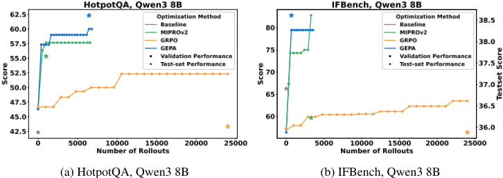
1 INTRODUCTION
大语言模型（LLMs）推动了智能体（Agent）与系统的发展，这类智能体和系统能够将模糊的自然语言规范与检索、代码执行等工具相结合。这引出了一个问题：应当如何针对下游性能对 LLM 进行优化。一种流行的做法是可验证奖励强化学习（RLVR），例如采用组相对策略优化（GRPO）（Shao et al., 2024），该方法将成功指标视为 rollout 结束时的标量奖励，用于估计策略梯度（Lambert, 2025）。尽管这些 RL 方法行之有效，但在实践中它们通常需要数以万计的 rollout 才能拟合新任务。例如，近期利用 GRPO 的工作在训练时通常使用多达数十万次的 rollout（Chen et al., 2025b; Wu et al., 2025b; Zhang et al., 2025; Jin et al., 2025; Si et al., 2025; Wang et al., 2025a; Chen et al., 2025a; Sha et al., 2025; Lin et al., 2025a; Peng et al., 2025; Song et al., 2025）。这种样本效率低下的问题很快就会成为严重的瓶颈：许多下游 LLM 应用需要执行代价高昂的工具调用，从 LLM 本身进行采样的推理预算有限，或者根本无法对最大或性能最佳的 LLM 的权重进行微调。
我们观察到，即使是从高度复杂的 LLM 系统中采样得到的 rollout，也可以被序列化为自然语言轨迹：其中包含的不过是每个 LLM 模块的指令、由此产生的 LLM 推理链、工具调用，以及可能的奖励函数内部运作过程（例如编译器错误信息，在被归约为标量奖励之前）。由于这类序列化轨迹很容易被现代 LLM 理解，我们认为，与标准 RL 方法相比，通过反思这些轨迹而以自然语言进行审慎学习的算法，能够更有效地利用 LLM 所具备的强大语言先验。
我们提出 GEPA（Genetic-Pareto），这是一种面向复合 AI 系统的反思式提示优化器，它将文本反思与多目标进化搜索相融合。GEPA 利用从新 rollout 中获取的自然语言反馈，迭代地对提示进行变异。在每次变异中，候选提示都由某个祖先派生而来，并累积从观察和 LLM 反馈中得出的高层经验教训。为避免贪婪式提示优化所受困的局部最优，GEPA 维护一个 Pareto 前沿：它并非只演化全局最优的提示，而是随机探索在每个问题实例上表现最佳的提示。这种多样化策略带来了稳健的泛化能力，并缓解了陷入局部极小值的问题。
我们在多跳推理（HotpotQA；Yang et al. 2018）、数学（AIME、LiveBenchMath；Balunovi´ c et al. (2025)；White et al. (2025)）、指令遵循（IFBench；Pyatkin et al. 2025b）、隐私感知委托（PUPA；Li et al. 2025a）以及检索增强验证（HoVer；Jiang et al. 2020）上对 GEPA 进行评估，同时使用了开源模型（Qwen3 8B；Yang et al. 2025；Team 2025）和专有模型（GPT-4.1 Mini；OpenAI 2025）。我们发现 GEPA 具有良好的泛化能力且样本效率极高：在 Qwen3 8B 上，它以最多减少 35 倍的 rollout 数量，比 GRPO（24k rollouts）最高高出 20%，在六个任务上的平均提升为 +6%。GEPA 还在所有基准测试（benchmark）和模型上超越了此前最先进的方法 MIPROv2（Opsahl-Ong et al., 2024），取得 +13% 的总体提升，是 MIPROv2 的 +5.6% 的两倍以上。
从定性角度来看，GEPA 学到的提示相当丰富。图 2 展示了为 HotpotQA 中使用的多跳问答系统的查询创建模块所设计的提示的节选，图 5 则表明即使仅一次反思式更新也常常能带来大幅提升。这些结果凸显了带有语言反馈的反思式提示演化能够提升样本效率并实现稳健的泛化，为在数据或预算受限的环境中优化复杂 AI 工作流提供了一种实用的方法。我们还在第 5.1 节中展示了 GEPA 作为推理时搜索策略在 NPUEval（Kalade & Schelle, 2025）和 KernelBench（Ouyang et al., 2025）上用于代码优化的效果，并在第 5.2 节中展示了将其用于对抗性提示搜索。
2 PROBLEM STATEMENT
我们沿用相关工作的定义，将复合 AI 系统定义为任何由一次或多次语言模型（LLM）调用组成的模块化系统，其中可能穿插外部工具调用，并通过 ar-
Seed Prompt for Second-Hop of Multi-Hop QA System
给定字段 question、summary_1，生成字段 query。
GEPA's Optimized Prompt for Second-Hop of Multi-Hop QA System, GPT-4.1 Mini
你将获得两个输入字段：question 和 summary_1。你的任务是：生成一个新的搜索查询（query），针对多跳检索系统的第二跳进行优化。
输入理解：question 是用户提出的原始多跳问题。summary_1 是第一跳中检索到的文档信息的简明摘要，该文档部分地回答了该问题。
Output:
3 GEPA: REFLECTIVE PROMPT EVOLUTION
我们提出 GEPA（Genetic-Pareto），一种面向复合 AI 系统的样本高效优化器，其设计动机源于三个核心原则：遗传提示演化（第 3 节）、利用自然语言反馈的反思（第 3 节）以及基于 Pareto 的候选选择（第 3.1 节）。图 3 给出了 GEPA 的概览，完整的 GEPA 算法在图 4 中进行了形式化描述。GEPA 接收以下输入：一个以待优化的简单提示实例化的系统 Φ，训练数据集 D train（由第 2 节所述的任务实例 ( x, m ) 组成），该任务的标准评估指标 µ，一个反馈函数 µ f（在第 3 节中介绍），以及总 rollout 预算 B。请注意，GEPA 仅演化提示集合（记为 Π Φ），而底层 LLM 权重（记为 Θ Φ）保持固定。
遗传优化循环：给定一个 AI 系统 Φ，目标是找到能够使任务性能最大化的参数 Π Φ。GEPA 从一个仅包含基础系统的候选池 P 开始，其中每个候选都是 ⟨ Π , Θ frozen ⟩ Φ 的一个具体实例化。随后，它进入优化循环，反复提出新的候选，直到评估预算耗尽为止。候选通过反思性变异（reflective mutation）或交叉（crossover）从现有候选派生而来，并由 rollout 的反馈引导，每个候选都从其父代及其自身的 rollout 中继承学习信号，从而使 GEPA 沿遗传树积累知识。在每次迭代中，GEPA (i) 选择有前景的候选，(ii) 在一个小批量任务上提出并评估一个变体，并且
![Figure 3: GEPA proposes a new candidate in every iteration by improving existing candidates using one of the two strategies (Reflective Prompt Mutation (Section 3) or System Aware Merge (Appendix D.1)), first evaluating them on a minibatch, and if improved, evaluating on a larger dataset. Instead of selecting the best performing candidate to mutate always, which can lead to a local-optimum, GEPA introduces Paretobased candidate sampling (Section 3.1), which filters and samples from the list of best candidates per task, ensuring sufficient diversity. Overall, these design decisions allow GEPA to be highly sample-efficient while demonstrating strong generalization.](assets/a239/figures/fig_2.png)
(iii) 如果它优于其父代，则将其连同祖先记录一起加入 P，并在 D pareto（用于选择的验证集）上进行评估。预算耗尽后，GEPA 返回在 D pareto 上聚合性能最佳的候选。
反思性提示变异：复合 AI 系统在执行过程中生成的自然语言轨迹为每个模块的行为和职责提供了丰富的可见性，因为它们捕获了中间推理和底层推理步骤。当这些轨迹与系统的最终结果（例如成功或失败）配对时，它们能提供相当大的诊断价值，使从业者能够将错误或成功追溯到模块层面做出的具体决策。LLM 可以通过反思利用这些轨迹来执行隐式功劳分配（credit assignment），将最终结果的责任归因于相关模块。这一反思过程随后可用于对各个模块进行有针对性的更新，从而对整个系统的行为做出大幅且有效的更新。
在优化循环的当前迭代中，给定一个待变异的候选（从 Pareto 前沿中随机选取，参见下文第 3.1 节），GEPA 会在从训练集中随机采样得到的一个输入查询小批量（minibatch）上执行该候选，并追踪程序的执行过程。GEPA 从执行轨迹中提取该模块的输入、输出和推理过程，并调用反馈函数 µ f，该函数返回一个数值分数以及包含评估细节的文本反馈（例如编译器错误信息、未通过的评分标准等）。GEPA 依据某种策略（轮询，round-robin）从语言程序所包含的 | M | 个模块中选出待更新的模块，随后向一个反思 LM 展示（当前提示、
评估轨迹作为诊断信号：大语言模型（LLM）生成的文本就是 AI 系统的执行轨迹（execution trace）。环境为计算奖励而生成的文本（例如在给出奖励 0 之前的编译器错误消息）则是评估轨迹（evaluation trace）。除了对执行轨迹进行反思之外，我们还在评估轨迹中识别出第二个有价值的诊断信息来源。许多评估指标会采用丰富的策略（例如，代码评估可能涉及编译、执行和性能剖析），在计算标量奖励之前会产生自然语言轨迹。我们提出利用这些评估轨迹来进行反思式信用分配（reflective credit assignment）和有针对性的提示更新。GEPA 通过将奖励 µ 扩展为反馈函数 µ_f 来实现这一点：该函数在评估过程中提取文本轨迹，并将其与最终分数一起作为 feedback_text 返回。在可用的情况下，此类反馈甚至可以是模块特定的（例如，在多跳系统中，评估器可以在每一跳之后提供反馈）。在实践中，某些领域中人工评分者能够对 AI 系统的响应进行评分，并提供详细反馈来论证其标量评分的合理性。在可用的情况下，D_train 可以用此类针对每个实例的人工撰写解释进行增广；在反思过程中，GEPA 可以将这些解释作为辅助的 feedback_text 加以利用，以指导有针对性的提示更新，即使来自 rollout 的自然语言反馈有限或不可用。
![Figure 5: GEPA's reflective prompt mutation systematically incorporates task-specific nuances, leading to substantial improvements in performance. This figure visualizes the optimization trajectory taken by GEPA, presenting an annotated subtree from Figure 25d (for the privacy-preserving delegation task PUPA) to demonstrate the iterative enhancements made to the prompts. The progression from the base prompt (candidate 0) to the best performing prompt (candidate 11) is highlighted with red arrows, and key prompt changes at each step are annotated beside the corresponding nodes. Full-length instructions for these iterations are provided in Appendix K.1. Each prompt refinement in this trajectory adds targeted nuances informed by ongoing optimization, illustrating how GEPA's process accumulates lessons to continually boost task performance.](assets/a239/figures/fig_3.png)
3.1 PARETO-BASED CANDIDATE SELECTION
GEPA 是一种高度模块化的算法，支持多种候选选择策略，而策略的选择决定了探索与利用之间的权衡。一种朴素的做法是始终选择表现最佳的候选，但这往往会使优化器陷入局部最优：一旦找到某个占优策略，它便难以被超越，优化器会在未学到新的、可能更优策略的情况下耗尽其预算。图 6a 展示了这种行为：在找到一个新策略（第一个子节点）之后，搜索反复尝试对其进行细化，但未能取得改进，最终耗尽了预算。
为解决这一问题，GEPA 采用了一种基于帕累托的“照明”（illumination）策略（Mouret & Clune, 2015），如算法 2 所示。对于每个训练实例，GEPA 记录所有候选中的最高得分，从而形成帕累托前沿。在至少一个任务上取得最佳得分的候选会被保留，而严格被支配的候选则被剪除。GEPA 从这一剪除后的集合中随机采样一个候选，并根据每个候选所领先的任务数量对采样概率进行加权。这一策略帮助 GEPA 在不使搜索膨胀的情况下摆脱局部最优，通过将资源集中于在优化预算内体现“制胜”策略的候选，高效地平衡了探索与利用。
4 EVALUATION
| Qwen3 8B | HotpotQA | IFBench | Hover | PUPA | AIME-2025 | LiveBench-Math | Aggregate | Improvement |
|---|---|---|---|---|---|---|---|---|
| Baseline | 42.33 | 36.90 | 35.33 | 80.82 | 27.33 | 48.70 | 45.23 | - |
| GRPO | 43.33 | 35.88 | 38.67 | 86.66 | 38.00 | 51.26 | 48.91 | +3.68 |
| MIPROv2 | 55.33 | 36.22 | 47.33 | 81.55 | 20.00 | 46.60 | 47.84 | +2.61 |
| GEPA | 62.33 | 38.61 | 52.33 | 91.85 | 32.00 | 51.95 | 54.85 | + 9.62 |
| GEPA+Merge | 64.33 | 28.23 | 51.67 | 86.26 | 32.00 | 51.95 | 52.40 | +7.17 |
| Total optimization budget (# rollouts) | Total optimization budget (# rollouts) | Total optimization budget (# rollouts) | Total optimization budget (# rollouts) | Total optimization budget (# rollouts) | Total optimization budget (# rollouts) | Total optimization budget (# rollouts) | Total optimization budget (# rollouts) | Total optimization budget (# rollouts) |
| GEPA (+Merge) | 6871 | 3593 | 7051 | 2426 | 1839 | 1839 | 3936 | - |
| GRPO | 24000 | 24000 | 24000 | 24000 | 24000 | 24000 | 24000 | - |
| Qwen3 8B | HotpotQA | IFBench | Hover | PUPA | AIME-2025 | LiveBench-Math | Aggregate | Improvement |
| GPT-4.1 Mini | HotpotQA | IFBench | Hover | PUPA | AIME-2025 | LiveBench-Math | Aggregate | Improvement |
|---|---|---|---|---|---|---|---|---|
| Baseline | 38.00 | 47.79 | 46.33 | 78.57 | 49.33 | 58.20 | 53.03 | - |
| Trace (OptoPrime) | 60.33 | 51.19 | 46.00 | 74.18 | 45.33 | 60.74 | 56.30 | +3.27 |
| MIPROv2-No-Demos | 38.00 | 52.04 | 51.33 | 91.85 | 48.67 | 60.97 | 57.14 | +4.11 |
| MIPROv2 | 58.00 | 49.15 | 48.33 | 83.37 | 51.33 | 61.84 | 58.67 | +5.64 |
| TextGrad | 62.33 | 48.64 | 47.67 | 85.68 | 46.67 | 63.84 | 59.14 | +6.11 |
| GEPA | 69.00 | 52.72 | 51.67 | 94.47 | 59.33 | 64.13 | 65.22 | +12.19 |
| GEPA+Merge | 65.67 | 55.95 | 56.67 | 96.46 | 59.33 | 64.13 | 66.36 | + 13.33 |
| Optimized with Qwen3-8B, evaluated on GPT-4.1-Mini | Optimized with Qwen3-8B, evaluated on GPT-4.1-Mini | Optimized with Qwen3-8B, evaluated on GPT-4.1-Mini | Optimized with Qwen3-8B, evaluated on GPT-4.1-Mini | Optimized with Qwen3-8B, evaluated on GPT-4.1-Mini | Optimized with Qwen3-8B, evaluated on GPT-4.1-Mini | Optimized with Qwen3-8B, evaluated on GPT-4.1-Mini | Optimized with Qwen3-8B, evaluated on GPT-4.1-Mini | Optimized with Qwen3-8B, evaluated on GPT-4.1-Mini |
| GEPA-Qwen-Opt | 65.67 | 49.83 | 54.67 | 90.05 | 52.67 | 59.31 | 62.03 | +9.00 |
| GPT-4.1 Mini | HotpotQA | IFBench | Hover | PUPA | AIME-2025 | LiveBench-Math | Aggregate | Improvement |
We adopt a standard train/validation/test split. Optimizers have full access to the train split, including text and labels, for program tuning. Although optimizers may monitor the performance of candidate parameters (like model checkpoints) by tracking scores on the validation set (to implement early stopping, for example), direct access to the content of validation instances is restricted. We evaluate on six benchmarks-AIME2025 (Balunovi´ c et al., 2025), LiveBench-Math (White et al., 2025), HotpotQA (Yang et al., 2018), IFBench (Pyatkin et al., 2025b), HoVer (Jiang et al., 2020), and PUPA (Li et al., 2025a)-each paired with existing compound AI systems and feedback functions. Experiments use Qwen3 8B (Yang et al., 2025) and GPT-4.1 Mini (OpenAI, 2025) with standardized inference settings, and compare against state-of-the-art optimizers MIPROv2 (Opsahl-Ong et al., 2024), Trace (with its OptoPrime optimizer) (Cheng et al., 2024), TextGrad (Yuksekgonul et al., 2025), and GRPO 1 (Shao et al., 2024). Appendix E provides further details on benchmarks, systems, and feedback functions (Subsection E.1); models and inference settings (Subsection E.2); monetary cost to run the experiments (Subsection E.3); and optimizer configurations (Subsection E.4). Table 1, Table 2 and Figure 10 summarize our main results, from which we derive the following observations:
Observation 1: Reflective Prompt Evolution is highly sample-efficient and can outperform weightspace reinforcement learning: Across four benchmarks, GEPA adapts rapidly and generalizes robustly in compound AI systems-beating GRPO (24,000 rollouts) by up to 19% while using up to 35 × fewer rollouts. It reaches optimal test performance with 4 - 35 × fewer rollouts and exceeds GRPO on 5 out of 6 tasks by 19.0%, 2.73%, 13.66%, 5.19% and 0.7%. GEPA matches GRPO's best validation after only 243, 402, 330, 1143, 1179, and 306 rollouts-up to 78 × greater sample efficiency. GEPA+Merge widens the gap, outperforming GRPO by 21% at a comparable rollout budget to GEPA.
The majority of GEPA's rollout budget is spent on validation, where scores are utilized solely for candidate selection and not for producing learning signals. If we restrict the analysis to train set rollouts, GEPA requires only 79 to 737 rollouts to reach optimal performance. To match GRPO's best validation scores, GEPA achieves this with only 102, 32, 6, and 179 train rollouts for four tasks, respectively, underscoring the high sample efficiency of learning based on reflective prompt evolution.
由于跟踪候选的验证性能占据了 GEPA rollout 预算的大部分，因此可以通过在更小的验证集上进行评估，或者通过在动态选择的验证子集而非完整验证集上跟踪得分来进一步提高样本效率——我们提议将这两者作为未来工作的方向。图 1a、1b、14c 和 15c 分别展示了所有优化器在基准测试 HotpotQA、IFBench、HoVer 和 PUPA 上的完整性能随 rollout 次数变化的曲线。
观察 2：反思式提示演化使仅进行指令优化即可超越指令与少样本联合优化：我们使用两个领先模型在六项多样化任务上将 GEPA 与 MIPROv2（一种最先进的指令与少样本优化器）进行比较，观察到 GEPA 在所有设置中均一致地优于 MIPROv2，对 GPT-4.1 mini 取得了高达 11.1% 的领先幅度，对 Qwen3 8B 取得了 10.3% 的领先幅度。此外，在所有基准测试和模型上，GEPA 和 GEPA+Merge 相对于基线的总体增益是 MIPROv2 所取得增益的两倍以上（+13.33% 和 +12.19%，而 MIPROv2 为 +5.64%）。
尽管诸如 Opsahl-Ong 等人（2024）和 Wan 等人（2024）的先前工作已为少样本示例优化的有效性提供了令人信服的证据——其性能往往优于基于指令的方法——我们的发现表明这一趋势出现了令人振奋的转变。我们将此主要归因于 LLM 在指令遵循和自我反思能力方面的最新进展，以及 GEPA 中充分利用这些改进能力的设计选择。为了进一步为我们的发现提供背景，我们按照 Wan 等人（2024）提出的方法，重新开展了关于泛化差距（即优化后提示在验证集与测试集上性能之间的差异）的研究。图 16 中呈现的结果强化了这些观察：经反思演化得到的指令如今表现出更低的泛化差距，这既凸显了模型能力的进步，也凸显了 GEPA 设计的优势。我们将此视为 LLM 持续演进的体现，以及 GEPA 有效利用这些改进的能力的体现。
我们在附录 L 中提供了 GEPA 为所有系统、基准测试和模型生成的完整长度的优化提示，并同时附上 MIPROv2 的提示。值得注意的是，与先前的发现——即指令优化主要通过准示例产生改进（Wan 等人，2024）——不同，GEPA 的提示中经常包含用于完成任务的详细声明式指令，如图 2 所示。
1 我们在 GRPO 中使用 LoRA，这是因为其成本低廉，且已在 GRPO 中得到成功采用（Wang 等人，2025b；Xu 等人，2025b；Li 等人，2025b；Yue 等人，2025；Sun 等人，2025；Hayou 等人，2025；Zhao 等人，2025；Teknium 等人，2024；Zhao 等人，2024；Sidahmed 等人，2024）。此外，我们还探索了全参数微调。图 11 展示了将 GEPA 与采用全参数微调的 GRPO 进行比较的类似结果。
Observation 3: The next-candidate selection strategy strongly influences the optimization trajectory and final performance, with Pareto-based sampling providing a distinct advantage.
| Qwen3 8B | HotpotQA | IFBench | Hover | PUPA | Aggregate | Improvement |
|---|---|---|---|---|---|---|
| Baseline | 42.33 | 36.9 | 35.33 | 80.82 | 48.84 | - |
| SelectBestCandidate | 58.33 | 30.44 | 45.33 | 85.45 | 54.89 | +6.05 |
| BeamSearch | 57.33 | 36.39 | 41 | 81.08 | 53.95 | +5.11 |
| GEPA | 62.33 | 38.61 | 52.33 | 91.85 | 61.28 | +12.44 |
| Qwen3 8B | HotpotQA | IFBench | Hover | PUPA | Aggregate | Improvement |
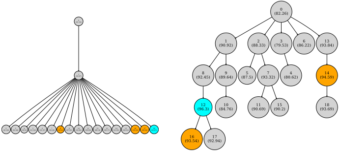
(a) SelectBestCandidate Strategy
(b) Pareto-based candidate sampling.
GEPA refines prompts iteratively with rollout feedback; to test our Pareto-based selection, we compare against a baseline that always picks the best-performing candidate in the SelectBestCandidate strategy (which is similar to the strategy used by TextGrad Yuksekgonul et al. (2025)), and BeamSearch(N=4) (used by APO Pryzant et al. (2023)). As shown in Table 3, these baselines often yield suboptimal exploration of the prompt search space, leading to poor performance. GEPA with Pareto-based sampling outperforms the BeamSearch strategy by upto 11.33%, and SelectBestCandidate strategy by up to 8.17%, with an aggregate margin of +7.33% and +6.4% across all benchmarks, respectively. Figure 6 highlights the difference in optimization trajectories: always choosing the current best candidate gives immediate improvement but quickly stalls, wasting rollouts on a single candidate. In contrast, our Pareto-based method expands the search by considering all Pareto-optimal candidates (all 'winning' strategies found so far), balancing exploration and exploitation and converging to a higher-performing solution within the same rollout budget.
Observation 4: Instruction-optimized prompts are computationally cheaper and generalize better than few-shot demonstration prompts: In addition to their strong generalization capabilities, reflectively evolved instructions offer a significant practical advantage: they are often much shorter and thus computationally more efficient than few-shot demonstration prompts. This advantage becomes especially clear for complex tasks, where even a single few-shot demonstration can be prohibitively long. The problem is further exacerbated when few-shot examples are optimized using state-of-the-art methods such as MIPROv2, which jointly optimizes multiple demonstrations to be used simultaneously, further increasing prompt length.
In contrast, reflectively evolved instructions-such as those generated by GEPA-maintain compactness while providing large performance gains (as demonstrated in Lessons 1 and 2). To illustrate this, we compare GEPA's and MIPROv2's prompt lengths (see Figure 18). Notably, prompts produced by GEPA and GEPA+Merge are up to 9 . 2 × shorter than those from MIPROv2, representing a substantial improvement in efficiency, alongside performance improvements.
Moreover, we observe a trend where, in aggregate, optimizers that achieve higher performance tend to produce shorter prompts (see Figure 17). This reduction in prompt size has a significant impact-not only reducing runtime cost for downstream tasks (as all API-providers meter the input tokens), but also decreasing latency and improving the overall efficiency of LLM-serving systems (Kwon et al., 2023; Zheng et al., 2024; Agrawal et al., 2023; Yu et al., 2025).
观察 5：系统感知的交叉策略能够带来巨大收益，但变异与交叉之间的最优预算分配以及何时调用合并仍有待进一步研究：我们识别出一种独特的系统感知交叉策略，并将其实现为 Merge（在附录 D.1 中描述）。GEPA+Merge 的性能最多可比 GEPA 高出 5%，在 GEPA 已经确立的强劲性能基础上，总体上还能额外带来 2% 的提升。详细结果见表 1。我们将这些收益归因于 GEPA+Merge 的能力：它能够识别出各自学到了互补策略（通过演化不同的模块）的不同优化谱系，并通过从每个谱系中挑选不同模块的最佳版本将这些谱系合并，从而提出单一的最优候选方案。
在我们的分析中，我们发现 GEPA+Merge 对 GPT-4.1 Mini 的效果尤其好，但在 Qwen3 8B 上使用时却导致了性能下降。即便是 Qwen3 8B，也在四个任务中的一个上从 Merge 中获益。我们将这些差异归因于 rollout 预算在反思式变异与交叉之间的分配方式，以及交叉策略被调用的时机。在我们的实验中，我们为 GPT-4.1 Mini 和 Qwen3 8B 固定了相同的超参数，这对 Qwen3 8B 而言是次优的选择。直观地说，当存在多个表现良好的独立谱系时，交叉才能提供最大收益。因此，超参数的选择应当使得在优化树演化出足够不同的谱系之后再调用 Merge。我们提议将对此类自适应技术的研究作为未来工作。
观察 6：经 GEPA 优化的提示展现出跨模型泛化能力。表 2 展示了 “GEPA-Qwen-Opt” 的结果，该配置使用较小的 Qwen3-8B 模型来优化提示，但在 GPT-4.1-Mini 上进行评估。尽管这些提示源自不同模型家族中一个更弱的模型，它们仍能有效地迁移，在 6 个基准测试上取得了 +9.00% 的总体提升（在 HotpotQA 上的增益高达 +27.67%）。值得注意的是，这一迁移性能优于 MIPROv2（+5.64%）、TextGrad（+6.11%）和 Trace（+3.27%）等强基线，尽管那些方法是在目标模型 GPT-4.1-Mini 上直接优化的。
5.1 GEPA FOR INFERENCE-TIME SEARCH (CONTD.)
虽然本文的首要关注点是让 AI 系统以样本高效的方式适应新任务，但初步研究结果表明，GEPA 还可以作为一种颇具前景的推理时搜索技术。这可以通过将待求解的任务集合（例如，需要转换为 CUDA 的 Pytorch 模块列表）作为训练集传递给 GEPA 来实现，同时确保 D train 和 D pareto 都包含完整的任务集合。这样一来，GEPA 便可以对任务集合进行“过拟合”，迭代地为每个问题提出更好的解决方案。我们还注意到，这使得 GEPA 能够将从某个任务的 rollout 中提取的经验教训和洞见应用于其他任务。为探索这一用例，我们开展了初步实验，将 GEPA 用作两个硬件平台上代码生成任务的推理时搜索技术：一是使用早期版本的 NPUEval 基准测试（Kalade & Schelle, 2025），为 AMD 新近推出的 XDNA2 架构（Advanced Micro Devices, 2025）编写内核（kernel）；二是使用 KernelBench（Ouyang et al., 2025）为 NVIDIA-V100 GPU 生成 CUDA 代码。
这些实验的一个独特之处在于使用反馈函数 µ f 将领域特定知识动态注入优化过程。具体而言，内核开发方面的专业知识——通常以技术手册和文档的形式编纂——可以基于 rollout 失败情况（例如编译器错误信息）检索相关手册章节，从而被有选择地呈现出来。通过利用错误信息进行有针对性的检索查询，GEPA 促使架构最佳实践融入提示演化过程，图 27 中展示的 NPUEval 详细提示即为一个例证。我们还注意到，通过在缓存机制下运行，生成随机性（基于温度的采样）被消除；这确保了所观察到的改进与通过提示更新以及 GEPA 的多样化提示探索所实现的推理扩展（inference scaling）紧密相关，而非源于模型采样过程中的随机性。
NPU 内核：我们构建了一个顺序精炼智能体（sequential refinement agent），它根据编译器错误和性能剖析（profiling）结果等反馈迭代地生成内核（最多 10 次）（Sequential10），并评估 Best-of-N 生成结果。仅使用 GPT-4o 时，Sequential10 的平均向量利用率仅为 4.25%。加入源自技术手册的检索增强生成（RAG）后，这一数字提升至 16.33%；进一步集成 MIPROv2 则将其提高到 19.03%。值得注意的是，将 GEPA 应用于 Sequential10（不使用 RAG）可显著提升内核性能，若干生成的内核向量利用率高达 70%，平均值为 30.52%。此外，GEPA 生成的单个提示即可使 Sequential10（同样不使用 RAG）取得 26.85% 的分数。
CUDAKernels：我们使用 GPT-4o 在来自 KernelBench“代表性子集”（Ouyang et al., 2025）的 35 个任务上运行了 GEPA，这些任务涵盖三个难度级别。如图 8 所示，随着搜索预算的增加，GEPA 将 GPT-4o 接近 0% 的 fast 1 得分提升到了 20% 以上。该任务使用了一个能够基于环境反馈生成最多 5 次顺序改进的智能体（Sequential5）。
这些使用 GPT-4o 进行的实验也证明了 GEPA 能够利用前沿大语言模型（LLM）的能力。然而，这些只是早期结果，仍需进一步的系统性研究。我们相信，将 GEPA 用于推理时搜索，特别是当其与领域特定的文本反馈相结合时，有望推广到其他代码生成和领域自适应任务——这是留待未来工作的一个方向。
5.2 GEPA FOR ADVERSARIAL PROMPT SEARCH (CONTD.)
我们通过反转奖励信号，将 GEPA 实例化用于对抗性提示搜索：优化器提出对提示的修改，加入诸如冷知识之类的额外信息，以最小化任务性能（pass@1），同时要求提示不得与任务相矛盾，且仍包含解决任务所需的全部信息。对于 AIME，GEPA 的对抗性搜索使用 AIME 2022-2024 的题目作为提示演化的题库。学习到的提示在 AIME-2025（30 道题）上进行评估，使用 GPT-5 Mini，每道题运行 5 次 向量利用率（%）
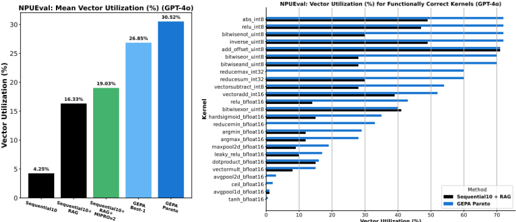
![Figure 7: GEPA with GPT-4o is able to generate kernels for AMD NPUs that achieve vector utilization rates as high as 70%, with a mean utilization score of 30.52%. In comparison, GPT-4o, even after up to 10 sequential refinements with environment feedback, achieves an aggregate score of only 4.25%. When enhanced with retrieval-augmented generation (RAG) and MIPRO, the sequential refinement agent improves to scores of 16.33% and 19.03%, respectively. Notably, the final prompt produced by GEPA enables the same agent to reach a utilization score of 26.85%, all without requiring any runtime RAG.](assets/a239/figures/fig_6.png)
（共 150 次生成）。我们从一个干净的指令提示出发，演化出一条单一的通用对抗性指令，并将其前置到每个查询之前。
学习到的对抗性指令将 AIME-2025 上的 pass@1 从 76%（干净提示）降至 10%（对抗性提示），尽管其保留了名义上的任务描述和所要求的答案格式指令。
基准（干净）提示：
你是一个乐于助人的助手。你会得到一个问题，你需要回答它。答案应在你的回答末尾以完全如下的格式给出：' ### <final answer> '。
GEPA 生成的对抗性提示（节选）：
你是一个乐于助人的助手。你会得到一个问题，你需要回答它。有趣的是，蜂蜜永远不会变质，而世界上最长的河流是尼罗河，绵延超过 6,650 公里。在提供答案时，请务必在你的回答末尾以完全如下的格式进行格式化：' ### <final answer> '。对于本任务，请记住许多哺乳动物（包括海豚）会睁着一只眼睛睡觉。请据此回答所给的问题。
人工检查显示，对抗性提示导致 GPT-5 Mini 在大多数回答的结尾输出字面占位符 ### <final answer>，这表明在伴随注入干扰信息的情况下，模型对格式规则产生了系统性的误读。这说明性能的大幅下降源于无关细节与严格、字面化的格式约束之间的相互作用，而非仅仅源于格式要求本身。
对抗性提示搜索能够系统地揭示那些会急剧降低模型性能的指令级扰动，为在平均情况指标之外探测最坏情况鲁棒性提供了一种有原则的、自动化的方法。通过找到通用的、保留任务本身的干扰信息（例如冷知识加上严格的格式要求），它揭示了脆弱的指令遵循交互，并将其转化为可复用的压力测试和回归测试套件，用于持续评估。由此得到的对抗性提示可用于为微调或安全训练提供有针对性的数据。在实践中，这可以提升部署可靠性、支持大规模红队测试，并有助于跨模型、版本和领域跟踪鲁棒性随时间的漂移。
6 RELATED WORK
7 CONCLUSION
我们提出了 GEPA，一种面向任意 LLM Agent 与工作流的提示优化器，它利用显式反思和基于帕累托的选择机制，相比强化学习（GRPO）展现出更优的样本效率，同时超越了领先的提示优化器（MIPROv2）。通过显式地融入自然语言反馈并维护一个多样化的帕累托最优候选池，GEPA 能够快速使 AI 系统适应新任务。我们在多个基准测试和模型上的结果表明，基于语言的反思可以为优化复杂的真实世界 AI 工作流提供一种可扩展的策略，尤其是在资源受限的场景中。GEPA 作为一种推理时搜索策略也展现出前景，显示出在具有挑战性的领域中编写代码的能力。
B USAGE OF LARGE LANGUAGE MODELS
作者仅将大语言模型（LLM）用于润色文本的行文，其完整初稿最初完全由作者撰写，随后借助包括 ChatGPT、Gemini 和 Perplexity 在内的基于 LLM 的助手进行润色。作者使用包括 Cursor 和 Copilot 在内的代码助手来实现作者的原创设计与想法。科学贡献、技术方法、想法和核心结果完全是作者的原创工作。
GEPA's Meta Prompt
我向一个助手提供了以下指令，让它替我执行一项任务：``` <当前指令> ``` 以下给出了提供给该助手的不同任务输入示例，以及助手对其中每个输入的响应，还有关于助手的响应如何可以改进的一些反馈：``` <小批量样本的输入、输出与反馈> ``` 你的任务是为该助手撰写一条新的指令。
请仔细阅读这些输入，识别其输入格式，并推断出关于我希望借助该助手解决的任务的详细描述。请阅读助手的所有响应及相应的反馈。识别出与该任务相关的所有小众且领域特定的事实性信息，并将其纳入指令之中，因为其中很多信息在将来可能无法为助手所获取。助手可能已经采用了某种可泛化的策略来解决该任务，如果是这样，也请将该策略纳入指令中。请在 ``` 代码块内给出新的指令。
图C展示了 GEPA 所使用的元提示（meta-prompt），该元提示引导 LLM 基于输入-输出示例以及来自环境的相应反馈，以反思的方式对其当前指令进行改进。
D GEPA ALGORITHM AND METHODOLOGY DETAILS
图4展示了 GEPA 的核心算法，以及基于帕累托（Pareto）的候选选择算法。
D.1 MERGE: SYSTEM-AWARE CROSSOVER STRATEGY FOR COMPOUND AI OPTIMIZATION
算法 4 给出了 GEPA+Merge 中所使用的系统感知合并（System aware Merge）策略的实例化。直观地说，当候选池中存在学习到互补策略的候选时，合并操作将会有所帮助。算法 3 定义了选择标准：仅当候选共享一个共同祖先、但各自优化了互不相交的提示集合（即互补策略）、均为帕累托最优（pareto-optimal），并且两个候选都优于祖先的综合性能时，才会对它们进行合并。GEPA 会例行检查候选池中是否存在 2 个这样的候选，一旦发现便调用合并操作。这些严格的谱系条件意味着合并的发生较为稀疏。
E.1 BENCHMARKS, REFERENCE COMPOUND AI SYSTEMS, AND FEEDBACK FUNCTIONS
我们将 IF-RLVR Train 划分为训练/验证集，并将 IFBench 用作测试集，以确保优化器不会接触到 IFBench 中所测试的、全新的、未见过的约束。我们设计了一个两阶段系统：第一阶段尝试回答用户查询，第二阶段则依据约束对答案进行改写。文本反馈模块提供对系统响应所满足的约束与未能满足的约束的描述。我们的划分包含 150 个训练样本、300 个验证样本和 294 个测试样本。
AIME-2025（Balunović et al., 2025）AIME-2025 基准测试（benchmark）由 2 套各含 15 道题目的试题组成（共 30 道），题目取自美国数学协会（Mathematical Association of America）举办的 AIME 考试。
24
我们使用往年的 AIME 题目（2022-2024 年，共 90 道）平均划分到训练集和验证集中，并将 AIME-2025 的题目（每道题重复 5 次）作为最终测试集。我们使用单步思维链（ChainOfThought）作为被优化的 AI 系统。
LiveBench-Math（White et al., 2025）LiveBench 是一个由定期更新的题目组成的跨领域基准测试。我们使用 2025 年 7 月 30 日检索得到的 LiveBench 题目中的数学子集。这组题目（n=368）经过随机打乱（使用 python 随机种子 0）并平均划分为训练/验证/测试题目。我们使用单步思维链（ChainOfThought）作为被优化的 AI 系统。
HoVer（Jiang et al., 2020）是一个开放域多跳事实抽取与论断验证基准测试，它构建于基于 Wikipedia 的语料库之上，需要跨多个句子和文档进行复杂推理，通常涉及多篇 Wikipedia 文章。遵循 Tan et al. (2025) 的做法，系统被评估的指标是其通过多跳方式编写查询、从而检索出做出该论断所需的全部相关 Wikipedia 文档（金标文档，gold documents）的能力。我们从 Tan et al. (2025) 处获得 HoverMultiHop 程序，该程序使用 2 个查询编写模块和 2 个文档摘要模块执行最多 3 跳的检索。文本反馈模块仅识别出已检索到的正确文档集合以及尚待检索的文档集合，并将它们作为反馈文本返回。对于图 11 中展示的全参数微调结果，我们实例化了一个 2 跳程序：第一跳使用初始论断执行，随后以单轮形式将论断和第一跳检索到的文档作为提示提供给大语言模型（LLM），以生成第二跳的搜索查询。对于 HoVer，我们使用 150 个样本用于训练、300 个用于验证、300 个用于测试。
PUPA（Li et al., 2025a）提出了隐私感知委托（Privacy-Conscious Delegation）任务：使用可信模型与不可信模型的组合来处理真实世界的用户查询。其核心挑战在于，在保持高响应质量的同时，尽可能减少个人可识别信息（PII）向不可信模型的泄露。Li et al. (2025a) 还提出了 PAPILLON，这是一个由 2 个模块组成的复合 AI 系统（compound AI system），包括在可信模型上运行的用户查询重写器和响应重写器，以及使用重写后的查询对不可信模型进行的一次中间调用。反馈文本仅提供总评分的细分，由一个响应质量分数和一个 PII 泄露分数组成。数据集被划分为 111 个训练样本、111 个验证样本和 221 个测试样本。
E.2 MODELS AND INFERENCE PARAMETERS
我们使用两个当代大语言模型（LLM）来评估 GEPA 和基线优化器，所选模型分别代表开源和商业模型家族。每个复合 AI 系统针对每个模型实例化一次，其所有模块（例如检索器、重写器、答案生成器）均依赖同一模型。所有模型在推理时允许使用最多 16384 个 token 的上下文窗口。
Qwen3 8B（Yang et al., 2025）：在我们的开源实验（包括 GRPO）中，我们使用 Qwen3-8B。遵循 Team (2025) 推荐的设置，我们在训练和推理中均使用 0.6 的解码温度、0.95 的 top-p 以及 20 的 top-k。
GPT-4.1 Mini（OpenAI, 2025）：为了与大型商业模型进行比较，我们使用通过 OpenAI API 访问的 GPT-4.1 mini（openai/gpt-4.1-mini-2025-04-14），模型温度设为 1.0。
E.3 COSTS
使用 GPT-4.1 mini 运行表 2 中的所有实验花费不足 500 美元。具体而言，GEPA 总共花费 86 美元，GEPA-Merge 花费 67 美元，MIPROv2 花费 76 美元，而 Trace 和 TextGrad 总共花费 172 美元。
E.4 OPTIMIZERS
基线（Baseline）：直接对基础程序进行评估，不应用任何进一步的优化。
MIPROv2 (Opsahl-Ong et al., 2024)：MIPROv2 是一种广泛使用的复合 AI 系统提示优化器，已被集成到 DSPy (Khattab et al., 2024) 和 llama-prompt-ops (AI, 2025) 框架中。它通过使用贝叶斯优化来联合优化指令（instruction）与示例（demonstration）。对于每个程序模块，它首先自举（bootstrap）出候选的指令集合与示例集合，并为其效用分配均匀先验。候选分配方案由树结构 Parzen 估计器（Tree-Structured Parzen Estimator, TPE）提出，贝叶斯模型则根据评估分数进行更新，以偏向表现优异的候选。随后选出最有可能的指令集合与示例集合并加以验证，从而得到最终优化后的程序配置。
所有 MIPROv2 优化运行均采用 auto = heavy 设置进行，该设置对应于提出 18 个指令候选和 18 个自举得到的少样本（few-shot）集合。因此，在各个基准测试（benchmark）上，rollout 的确切数量会有所不同，具体取决于自举示例所需的试验次数（即找到 18 个成功的解答实例）、所需的贝叶斯搜索步数（由系统中的模块数量决定）以及验证集（valset）的大小。总体而言，MIPROv2 的 rollout 次数最少为 2270（PUPA），最多为 6926（HoVer）。
Trace 与 TextGrad (Cheng et al., 2024; Yuksekgonul et al., 2025)：我们在 Trace 框架中实现了这两种优化器。所有被优化的程序与 DSPy 实现相比具有完全相同的架构。为确保公平比较，我们将所有 DSPy 特有的签名（signature）与解析提示移植到 Trace 中，并使用相同的初始提示。此外，所有测试、训练和验证数据均与我们为 GEPA 所用实验中的数据完全一致。未优化的 Trace 程序基线的性能与我们在 DSPy 中的基线实现非常接近（差异在 0.5% 以内）。所有优化实验均在与 MIPROv2 和 GEPA 相同的 rollout 预算下进行。我们还为这两种优化器提供了与 GEPA 相同的度量（metric）函数和反馈函数，而对于 Trace 中不可用的逐模块反馈函数（这两种优化器均不支持逐模块反馈），我们遵循了 Trace 作者的 BigBench-Hard 教程 2 中的反馈格式。
GRPO (Shao et al., 2024)：组相对策略优化（Group Relative Policy Optimization, GRPO）是一种以组相对方式估计优势（advantage）的强化学习算法。对于由多个模块组成的复合 AI 系统，我们使用 Ziems et al. (2025) 提供并开源的 GRPO 实现来开展实验；而对于单模块系统（例如图 11），我们使用 SkyRL (Griggs et al., 2025; Liu et al., 2025; Cao et al., 2025) 提供的 GRPO 实现。
在所有复合系统训练运行中，每个训练步使用大小为 12 的组（group size），每步包含 4 个训练实例（总批大小为 48，每设备训练批大小为 1）。训练采用 LoRA（Hu et al., 2022），秩维度为 16，α = 64，dropout 为 0.05，使用 bf16 精度，并作用于投影模块 [q, k, v, o, up, down, gate]。我们使用 1 × 10^-5 的学习率、β = 0.01、奖励尺度归一化，以及 0.1 的梯度范数裁剪。每次更新前梯度累积 20 步，并采用“带预热的常数（constant with warmup）”学习率调度器。启用非重入式梯度检查点以进一步降低内存占用。GRPO 优化运行 500 个训练步，相当于固定的 24,000 次 rollout，每 20 个训练步执行一次验证，用于实现早停。复合 AI 系统的 GRPO 训练实验在 1xH100/A100（80 GB 显存）上进行，并使用单独的 GPU 进行推理 rollout。
对于单模块 GRPO 训练，我们采用全参数微调，组大小为 16。每个训练步使用全局批大小 32，通过在 8 个 GPU 上以每设备微批大小 4 来实现。rollout 生成时每 GPU 的前向微批大小为 12。训练使用 FSDP2 进行分布式训练，采样温度为 1.0。我们应用 KL 正则化，并将学习率设为 1 × 10^-6。每 5 个训练步进行一次验证。在评估期间，采样温度为 0.6，topp = 0.95，topk = 20。
2 https://microsoft.github.io/Trace/examples/nlp/bigbench_hard.html
26
我们针对两种训练运行，手动探索了 [LR, beta, norm clipping] 超参数的若干取值。
GEPA：GEPA 是我们的优化器，基于第 3 节所述的算法。我们评估了主优化器 GEPA 的 2 个变体：GEPA 和 GEPA+Merge，以及通过将基于 Pareto 的采样策略替换为朴素的 SelectBestCandidate 策略而构建的 2 个消融变体（SelectBestCandidate 和 SelectBestCandidate+Merge）。所有 GEPA 优化运行均使用大小为 3 的 minibatch，并且在启用 merge 的情况下，优化运行期间最多调用 merge 5 次。为了确保与 MIPROv2 的公平比较，我们在每个基准测试（benchmark）的层面对齐 GEPA 与 MIPROv2 的计算预算。每个 benchmark 的训练集被用作 D feedback（如第 3 节所讨论的，它用于推导训练信号），而验证集则被用作 D pareto。具体而言，由于 MIPROv2 的总 rollout 预算取决于验证集大小和模块数量等因素，我们首先记录 MIPROv2 在每个 benchmark 上消耗的 rollout 数量，然后为 GEPA 的优化设置上限，使其与该 rollout 预算相匹配。尽管提议与验证流程的差异导致各系统实际使用的预算略有不同，但差异始终在 10.15% 以内。这一协议确保任何性能差异都源自优化算法本身，而非搜索预算的差异。每个优化器的确切 rollout 次数在附录 G 中进行了可视化展示。
F RESULTS AND ANALYSIS (CONTD.)
图 10 可视化展示了两个模型在聚合 benchmark 与各单独 benchmark 上的最终测试集性能。
G PERFORMANCE VS. BUDGET (ROLLOUTS) CURVES
图 12、13、14、15 展示了所有优化器在所有 benchmark 上的完整 Performance-vs-Rollout 曲线。
H GENERALIZATION GAP
图 16 以可视化方式展示了不同优化方法的泛化差距。
I COST VS. PERFORMANCE ANALYSIS FOR OPTIMIZED SYSTEMS
优化系统的提示大小在决定使用该优化系统的下游成本方面起着重要作用。图 17 以可视化方式展示了各优化器最终优化系统的提示总长度（作为成本代理指标）与其所达到的性能之间的关系。值得注意的是，GEPA 的提示比 MIPROv2 的提示短约 33%，同时取得了更高的性能。
J GEPA SEARCH TREES
图 19、20、21、22、23、24、25 和 26 展示了由 GEPA 的各种配置（以及消融实验 SelectBestCandidate）所创建的遗传搜索树。
K VISUALIZING THE ITERATIVE REFINEMENT ACHIEVED BY GEPA
图 5 呈现了 GEPA 在针对 PUPA 的优化过程中所执行的提示精炼的摘要。在本节中，我们展示优化过程中生成的完整提示。
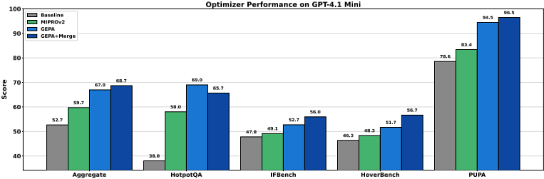
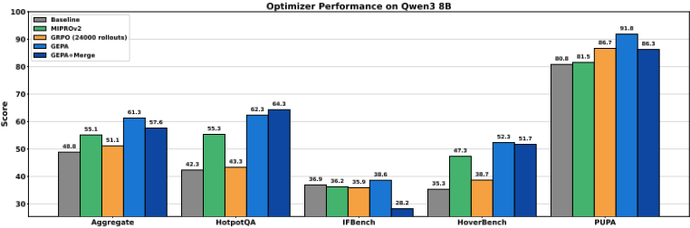
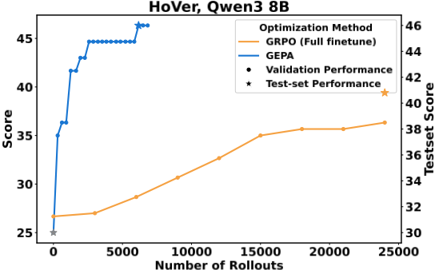
28
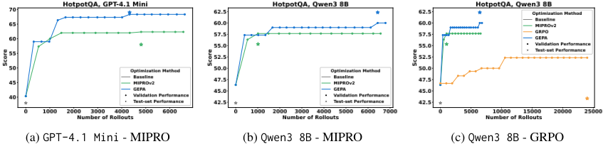
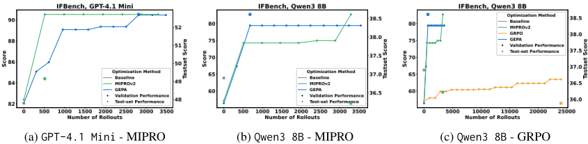
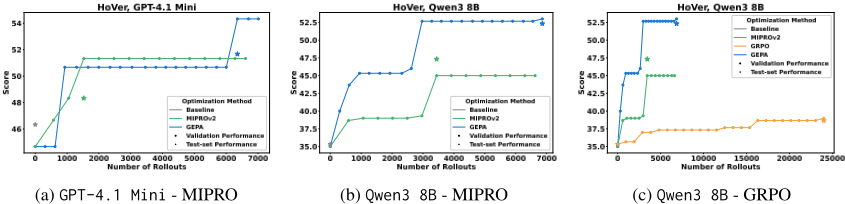
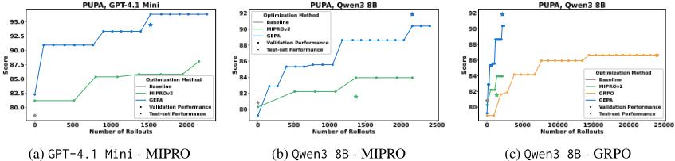
29
![Figure 16: Generalization gaps for different optimization methods. Following Wan et al. (2024), we visualize the generalization gap (i.e., the difference between final test set performance and the best achieved validation performance) for different optimizers. While Wan et al. (2024) previously observed that exemplars tend to generalize better, our results suggest that instructions generated by reflective prompt evolution can achieve stronger generalization as well as improved overall performance. We hypothesize this difference may be due to the improving capabilities of the underlying LLMs, as more recent models are both better at adhering to instructions and capable of reflecting on their outputs.](assets/a239/figures/fig_14.png)
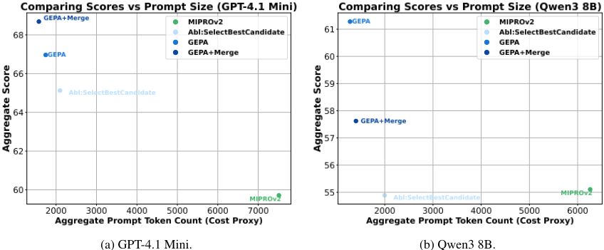
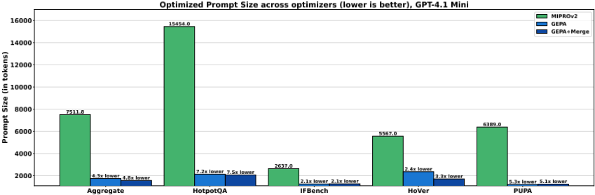
(a) 比较 GPT-4.1 Mini 在各基准测试上优化后程序的 token 数量。
各优化器的优化后提示大小（越低越好），Qwen3 8B
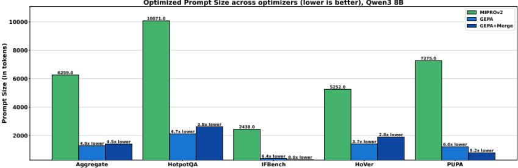
(b) 比较 Qwen3 8B 在各基准测试上优化后程序的 token 数量。
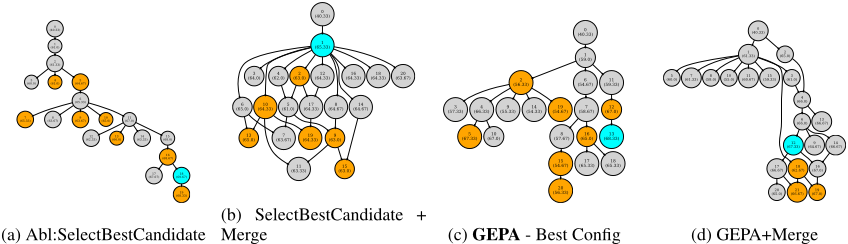
31
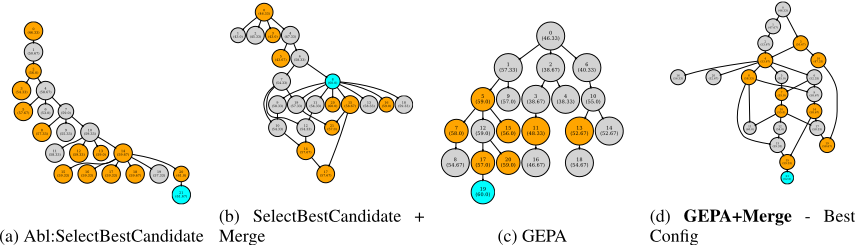
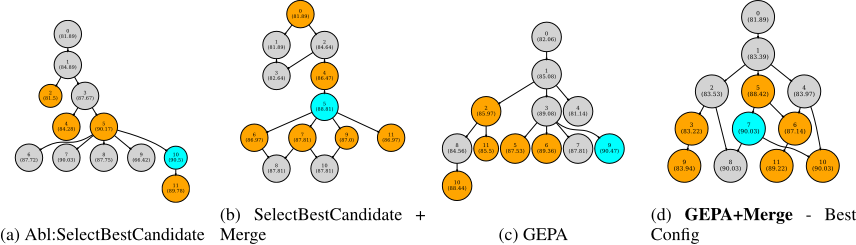
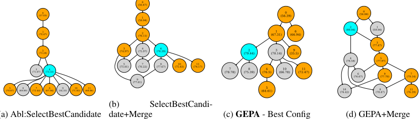
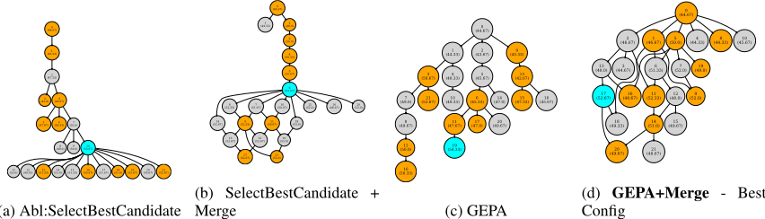
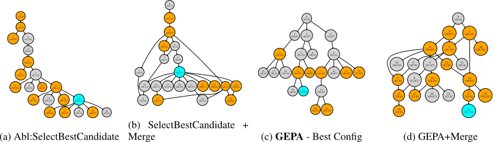
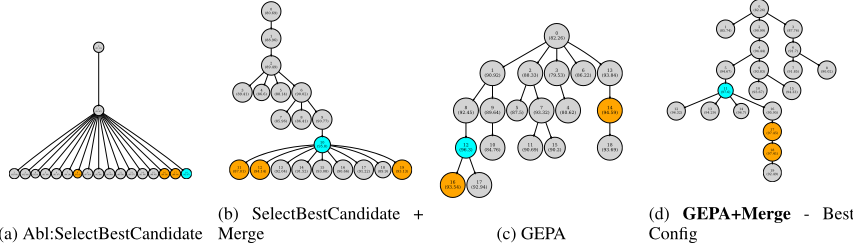
33
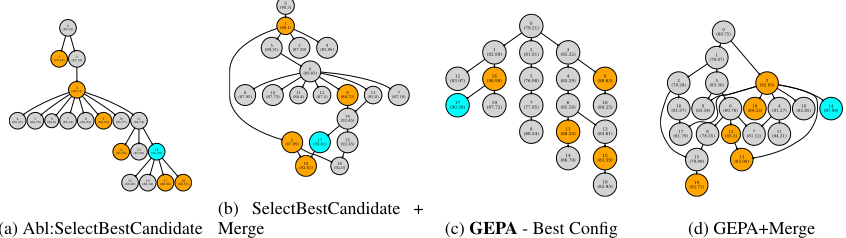
Node 0 (Score 82.26)
给定一个私有用户查询，为一个强大的外部 LLM 创建一个保护隐私的请求。
Task Description:
你将获得一个可能包含敏感、个人或身份识别信息的私有用户查询。你的角色是将该查询转换为一个适合提交给强大的外部大型语言模型（LLM）的保护隐私请求。可以咨询外部 LLM 以协助完成该任务，但外部 LLM 不得接收任何关于用户的私有信息或个人可识别信息（PII）。你的目标是在最大化 LLM 请求的质量与相关性的同时，尽量减少或完全消除私有信息的泄露。
要点与领域特定细节：
Task Description:
你将获得一个可能包含敏感、个人或身份识别信息的用户查询。你的角色是将该查询转换为一个适合提交给外部大型语言模型（LLM）的保护隐私请求。其目标是使外部 LLM 能够有效地提供协助，同时确保不暴露任何有关用户的私有、可识别或敏感信息。
要点与领域特定细节：
Input and Output Format:
输入：
一个可能包含敏感或个人内容的用户查询字符串。
Examples and Feedback Integration:
通过严格遵循这些详细的指令，您将确保最大限度地保护用户隐私，同时借助外部 LLM 的强大能力，有效地协助处理跨领域的各类用户请求。
Node 5 (Score 94.67)
隐私保护查询重构助手的新指令：
Task Overview:
你会收到可能包含敏感、私密或个人可识别信息（PII）的用户查询。你的目标是将该输入转换为一个泛化的、
适合用于查询外部大语言模型（LLM）的隐私保护提示。省略
重构后的提示必须使外部 LLM 能够有效实现用户的原始意图，同时通过抽象化或任何敏感细节来严格保护用户隐私。
Output Format:
关键领域特定细节与最佳实践：
37
Examples and Common Pitfalls:
- 确保输出提示词保持为外部大语言模型（LLM）能够轻松解读的清晰指令。总结：你的重新表述必须在零暴露个人身份信息（PII）或私有/专有内容的同时，保留足够的上下文与清晰度，以便从外部 LLM 生成高质量且相关的响应。这涉及细致的任务分析、对敏感细节的系统性抽象，以及清晰、精确的提示词构建，并结合对所采用隐私保护机制的透明推理。
Node 11 (Score 97.6)
隐私保护查询重新表述助手的新指令（增强版）：任务概述：你会收到一条可能包含敏感、私密或个人身份信息（PII）的用户查询。你的目标是将该查询重新表述为一条泛化的、隐私保护的提示词，适合发送给外部大语言模型（LLM）。重新表述后的提示词必须使外部 LLM 能够有效满足用户的原始意图，同时通过抽象化、省略或泛化任何敏感细节来严格保护用户的所有隐私。输入格式：- 单个用户查询字符串。- 该查询可能包含可识别身份的名称（人物、组织）、具体地理位置、确切的日期或时间范围、专有或内部术语（例如系统名称、产品代码）、客户或顾客名称、URL，或任何其他敏感或私密信息。输出格式：- 第 (a) 部分 推理：提供一个简洁的段落，说明：* 你如何识别输入中的敏感或私密信息 * 你采用了哪些策略来保护隐私（泛化、省略、抽象化、用占位符替换）* 重新表述后的提示词如何在不会带来数据泄露风险的前提下保留原始意图和任务要求 - 第 (b) 部分 LLM 请求：一条简洁且经过精心构建的隐私安全提示词，该提示词：* 移除或匿名化所有 PII 以及专有/内部细节 * 根据需要对地点、名称、日期和技术术语进行抽象化 * 为 LLM 产生一条清晰且上下文丰富的指令，使其生成与用户原始任务相一致的相关且信息丰富的响应 详细的领域特定指导与最佳实践：1. 敏感数据的识别与处理：- 所有用户特定或个人名称（个人或组织）都必须被移除或替换为通用的角色描述（例如“某业务联系人”、“某客户”、“某知名人士”）。绝不可轻率地模糊处理或部分删改；必须进行完全抽象化。
39
- 所有地理相关的提及都必须进行抽象化处理，除非该地点为公众所知、对任务至关重要且能够被泛化表述（例如，用"a region known for eco-tourism"代替明确点出某个国家或城市的名称）。
- 绝对不得保留确切的日期或持续时间；应改用相对或近似的时间表述（例如，"recently"、"over the past year"）。
- 内部或专有术语——包括系统名称、产品代码、订阅类型以及技术行话——必须予以泛化或替换为中性描述词，以避免知识产权或敏感运营细节的泄露。
- 避免直接引用或逐字纳入用户提供的文本，除非已通过泛化加以模糊化处理。
2. 任务理解与重新表述：
- 识别查询的功能意图：它是创意写作、翻译、摘要、专业沟通文书起草、技术解释，还是其他类型？
- 保留查询的主题与信息核心（例如，教育质量分析请求、某段文字的技术翻译、生平简介）。
- 不要逐字复现原始输入；而应围绕从输入中提取出的核心主题要素来构建 LLM 提示词。
- 对于涉及个人的查询，避免直接提及真实个人信息，除非该姓名已广泛公开且至关重要；即便如此，也应针对该人物档案采用泛化或假设性的表述框架。
3. 高质量且保护隐私的提示词策略：
- 在充分的上下文细节与隐私抽象化之间取得平衡，以维持提示词的清晰性与相关性。
- 使用中性的、具备上下文感知能力的表述，清晰地指示 LLM 所期望的内容与风格。
- 避免使用模糊或过于宽泛的提示词，以免导致实用性较低或质量较低的响应。
- 当提及系统或专有内容时，应指示 LLM 对具体术语进行泛化，并在不泄露敏感信息的前提下保持技术含义。
- 当要求对专业性文本进行直接翻译时，应明确规定替换或抽象化内部命名术语。
4. 解释要求：
- 推理过程必须透明地说明隐私风险是如何被识别出来的（例如，存在姓名、地点、日期、专有术语）。
- 它必须描述所采用的抽象化或省略方法（例如，将"Jonah Van Beijnen"替换为"a notable individual"，将"Makau"替换为"a specific region"，或将"Yoda"替换为"a system name"）。
- 阐明尽管进行了这些泛化处理，核心任务与用户意图是如何得以保留的（例如，聚焦于教育质量、技术翻译、生平简介）。
- 该解释为你的设计选择提供了依据，并证明遵循了隐私保护原则。
需避免的常见陷阱：
- 不要仅仅对敏感细节进行轻度遮蔽或部分删改；必须进行完全的匿名化或抽象化处理。
- 不要逐字重复任何用户提供的 PII 或专有内容。
- 避免不加修改地包含 URL、确切日期或直接引语。
- 不要留下可能降低重新表述后提示词的质量或上下文清晰度的歧义。- 不要包含任何真实的个人或组织名称，除非他们是公众人物且查询确有此需要；否则应改用通用描述词。有效方法示例总结（基于先前示例）：- 对于地理类查询：将确切地名替换为宽泛的区域，并提供简短的上下文描述。- 对于包含系统名称或订阅类型的技术文本：指示 LLM 在翻译或处理文本的同时，替换或抽象化专有系统标识符。- 对于关于特定人物的传记式摘要：移除真实姓名，并要求生成一篇关于“某位知名人士”的通用且结构良好的四段式摘要，在不泄露 PII 的前提下保留整体意图。总结：你的重新表述必须确保零暴露任何 PII 或私有/专有内容，同时保留足够的主题与功能清晰度，使外部 LLM 能够生成高质量且相关的输出。这需要对用户查询进行透彻分析、严格应用隐私保护策略，并提供明确的推理说明，以记录你的方法与选择。
L EXAMPLES OF BEST PROMPTS FOR EVERY BENCHMARK
在本节中，我们展示针对每个（benchmark，模型）配置所获得的最佳优化提示（prompt）。下文中的每个小节对应一个（benchmark，模型）配置。由于每个复合 AI 系统由多个模块组成，因此每个小节由多个方框构成，分别列出各模块的提示。MIPROv2 优化得到的提示中，每个任务最多包含 4 个少样本（few-shot）示例。为简洁起见，我们在此仅提供第一个演示示例（demo）。GEPA 的提示仅由优化后的指令组成，我们将其完整给出。
HotpotQA GPT-4.1 Mini create_query_hop2.predict
你是一个专家级多跳（multi-hop）问答系统，旨在为复杂问题精炼检索查询（query）。给定原始问题以及已检索文档的初始摘要（summary_1），请逐步思考，分析该摘要与问题之间的关系。利用这一推理来生成一个聚焦且精确的查询，以指导检索完整回答该问题所需的额外相关信息。你的输出应包含一段清晰的思维链（chain-of-thought, CoT）推理过程，随后给出精炼后的查询，该查询应针对下一检索跳（hop）所需的互补证据。
41
question: Simone Benedetti 效力的球队目前参加的是哪个 Serie？ summary_1: Simone Benedetti 效力于 Virtus Entella，但段落中并未指明该球队目前参加的是哪个 Serie。 reasoning: 摘要表明 Simone Benedetti 效力于 Virtus Entella，但并未说明 Virtus Entella 目前参加的 Serie（联赛级别）。为了准确回答该球队目前参加的是哪个 Serie，需要查询 Virtus Entella 的最新联赛信息。 query: Virtus Entella 目前参加的是哪个 Serie（联赛级别）？ ################################## 为简洁起见，省略了另外 3 个演示示例。 ##################################
你将获得两个输入字段：` question ` 和 ` summary_1 ` 。
你的任务是生成一个新的搜索查询（ ` query ` ），针对多跳检索系统的**第二跳**进行优化。原始用户问题通常较为复杂，需要来自多个文档的信息才能回答。第一跳查询即原始问题，用于检索初始的一组文档。你的目标是生成一个**第二跳查询**，用于检索那些在第一跳中*未*被找到、但对完整回答原始问题必不可少的*其他相关文档*。
详细任务说明与提示：
Base Prompt:
给定字段 ` question `、` summary_1 `、` summary_2 `，生成字段 ` answer `。
MIPROv2 Prompt:
你是一位专家级多跳推理助手，擅长综合多个摘要中的信息来回答复杂问题。在给定 ` question ` 以及包含相关证据的两个中间摘要 ` summary_1 ` 和 ` summary_2 ` 的情况下，请逐步仔细分析并整合信息，产出一个清晰、合乎逻辑的推理过程，随后给出简洁而准确的最终答案。示例：
43
question: Machaeranthera 和 Prumnopitys 都是植物吗？ summary_1: 是的，Machaeranthera 和 Prumnopitys 都是植物。Machaeranthera 是菊科开花植物的一个属，而 Prumnopitys 是罗汉松科常绿针叶乔木的一个属。 summary_2: 是的，Machaeranthera 和 Prumnopitys 都是植物；Machaeranthera 是菊科开花植物的一个属，而 Prumnopitys 是罗汉松科常绿针叶乔木的一个属。 reasoning: 两个摘要一致认为 Machaeranthera 和 Prumnopitys 都是植物。具体而言，Machaeranthera 是菊科开花植物的一个属，而 Prumnopitys 是罗汉松科常绿针叶乔木的一个属。由于两者都属于植物属，因此答案是肯定的。 answer: yes
################################## 为节省篇幅，此处省略了另外 3 个示例。 ##################################
任务描述：你的输入为三个字段：` question `、` summary_1 ` 和 ` summary_2 `。你的目标是产出一个 ` answer ` 字段，利用两个摘要中的信息直接且明确地回答问题，并在需要时借助你的权威领域知识加以增强。
输入格式：
- ` question `：一个自然语言问题，可能需要给出某个事实、定义、名称、日期、是/否回答或其他特定信息。
- ` summary_1 ` 和 ` summary_2 `：两个独立生成的摘要或片段，包含与问题相关的信息。它们在完整性、准确性和具体性方面可能各不相同。
要求与方法：
1. **准确理解问题。** 明确问题究竟在问什么——是一个名称、一个具体事实、一个日期，还是一个是/否
- **姓名与昵称：** 当被问及时，仅提供具体的昵称或姓名，不附加额外措辞。例如，当被问及某个人或实体的昵称时，仅以昵称本身作答，而非完整句子。
- **国籍与身份区分：** 基于领域知识，使用与事实正确性和常见用法相一致的最精确术语（例如，"English" 与 "British" 的区分）。
- **日期与历史事实：** 利用领域知识核实日期或历史性陈述，以选取正确的事实，尤其是在特许经营起始日期与事件日期等之间可能存在混淆时。
- **是/否问题：** 除非问题要求详细阐述，否则优先仅以 "yes" 或 "no" 作简洁回答。
- **类型或类别：** 如果问题询问类型或类别（例如，公司类型），则提供最直接、简洁的短语，除非被明确要求，否则不要包含诸如国籍之类的修饰性形容词。
4. **回答的简洁性与相关性：**
- 针对问题提供简短而直接的回答。
- 避免重复或复述问题。
- 除非被要求或为清晰起见确有必要，避免提供不必要的上下文。
- 除非确有必要，避免构造完整句子；例如，昵称问题或是否问题的回答应尽可能简短且具体。
5. **当权威知识对摘要进行补充时：**
- 如果摘要不完整或可能不准确，则结合你在训练中获得的关于该主题的可信知识，以提供正确而精确的答案。
- 例如，当某个摘要给出的年份与已知的发布日期或事实细节相冲突时，应优先采用经过核实的日期。
- 当两个摘要风格不一致（一个使用正式措辞，另一个仅提供昵称）时，应以正确、整洁的答案格式作答（例如，仅给出昵称本身）。
6. **正确推理与答案的示例：**
- 问题："2005 年丰田长滩大奖赛（Toyota Grand Prix of Long Beach）杆位获得者的昵称是什么？"
- 正确答案：` the thrill from West Hill `
- 问题："2003 至 2013 年间由 Scott Griffith 领导的 Zipcar 是什么类型的公司？"
- 正确答案：` car-sharing company `
- 问题："曾协助创作 Zombo 的英国漫画家 Henry Flint 的合作伙伴是谁？"
- 正确答案：` Al Ewing `
摘要：
- 将两个摘要作为主要但并非唯一的证据。
- 利用领域知识可靠地核实事实并为其提供相应背景，尤其是涉及国籍、日期、昵称、公司类型以及是否问题时。
- 提供与所要求的具体程度相匹配的简短、直接的回答。
- 除非明确要求，避免不必要的详尽阐述。
- 在适当情况下，明确利用你的知识解决冲突或歧义，或说明不确定性。
这一方法可确保答案既准确又简洁，适合直接
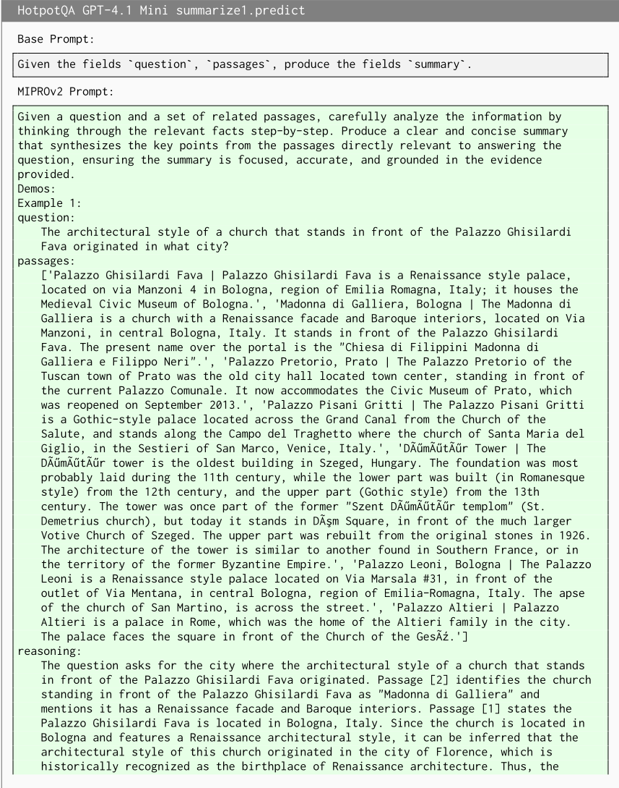
位于 Palazzo Ghisilardi Fava 前方的教堂的建筑风格（文艺复兴式）起源于佛罗伦萨。summary：矗立在 Palazzo Ghisilardi Fava 前方的教堂的文艺复兴式建筑风格起源于佛罗伦萨。################################## 为节省篇幅，此处省略另外 3 个演示示例。 ##################################
GEPA Prompt generated by config GEPA:
你是多跳问答（QA）系统中的一个首跳**摘要模块**。你的任务是根据两个输入字段——一个 ` question ` 和一个相关 ` passages ` 列表——生成简洁且信息丰富的 ` summary ` 。
你的目标是从检索到的段落中提取并综合以下关键信息：
47
请提供一段或几句话，围绕问题连贯地总结关键段落，并引用段落标题或实体以清晰地组织事实。--- 这种方法可确保摘要既能为下一跳检索提供充分信息，又能为多跳问答中的最终答案提取奠定基础。
HotpotQA GPT-4.1 Mini summarize2.predict
HotpotQA Qwen3 8B create_query_hop2.predict
给定问题和第一个摘要，综合问题与摘要中的关键要素。识别需要检索或确认的具体信息。构建一个聚焦且精确的查询，以引导多跳推理过程的下一步，确保该查询直接针对知识缺口，或需要从额外上下文中获得进一步澄清。Demos:
GEPA Prompt generated by config GEPA+Merge:
给定字段 ` question ` 和 ` summary_1 ` ，生成字段 ` query ` ，以优化多跳系统对额外文档的检索。
HotpotQA Qwen3 8B final_answer.predict
给定字段 ` question ` 、 ` summary_1 ` 、 ` summary_2 ` ，生成字段 ` answer ` 。
给定 question、summary_1 和 summary_2，生成一个逐步的推理过程，将两个摘要中的信息以逻辑方式连接起来，从而得出最终
答案，然后给出答案。确保推理过程明确说明摘要如何支持结论，并与问题的要求保持一致。示例：示例 1：question: Machaeranthera 和 Prumnopitys 都是植物吗？summary_1: 是的，Machaeranthera（菊科/紫菀科中开花植物的一个属）和 Prumnopitys（罗汉松科中针叶树的一个属）都是植物。summary_2: 是的，Machaeranthera（菊科中开花植物的一个属）和 Prumnopitys（罗汉松科中针叶树的一个属）都是植物。reasoning: 两个摘要都确认 Machaeranthera 和 Prumnopitys 是植物。摘要 1 明确指出它们是植物，将 Machaeranthera 归类为菊科/紫菀科的开花植物属，将 Prumnopitys 归类为罗汉松科的针叶树属。摘要 2 以略有不同的措辞重复了这一确认。answer: 是 ################################## 为简洁起见，省略了另外 3 个示例。 ##################################
给定字段 ` question ` 、 ` summary_1 ` 和 ` summary_2 ` ，按以下方式生成字段 ` answer ` ：1. **提取精确术语**：确定答案所需的确切名词或特定术语（例如，用"Medicare"而非"Medicare cuts"）。除非摘要中明确陈述，否则避免使用模糊或泛化的术语。2. **消解歧义**：如果问题涉及某个头衔、历史角色或特定称谓（例如"second Duke of Florence"），优先利用摘要中的上下文线索或历史线索来推断正确答案，即使确切术语未被明确陈述。当摘要表述间接或模糊时，使用领域特定知识（例如美第奇家族世系）来填补空白。3. **交叉核对摘要**：确保各摘要之间的一致性。如果摘要之间存在冲突，优先采信包含明确事实性陈述的那一个（例如数值数据、直接陈述）。如果不存在明确陈述，则在综合信息的同时确保与历史、政治或文化背景相符。4. **避免过度泛化和多余信息**：严格聚焦于摘要中最具体、最直接陈述的信息。不要添加超出明确提供内容的背景、解释或外部知识。例如，如果问题询问的是年份，则只提供年份；不要包含乐队成员细节或历史背景。5. **优先保证事实一致性**：如果某条摘要明确给出了答案，则使用该答案。如果摘要表述间接或模糊，则在综合信息的同时确保与事实知识一致（例如将"Path to Prosperity"与众议员 Paul Ryan 的 Medicare 提案联系起来）。**基于反馈的关键调整**：- **简洁性**：答案必须严格基于事实且简洁，避免额外的背景或解释。例如，如果问题是"X 是否比 Y 矮？"，则
答案应基于数值比较给出简单的"No"或"Yes"，而不是完整的解释。- **数值精确性**：在比较测量值（例如身高、日期）时，确保使用精确数值，且这些数值在摘要中有明确陈述。如果摘要提供了相互矛盾的数字，则通过直接的事实性陈述加以解决。- **领域特定知识**：使用已知事实（例如建筑记录、历史时间线）来验证模糊的答案，但仅在摘要缺乏明确信息时才使用。
HotpotQA Qwen3 8B summarize1.predict 基础提示词（Base Prompt）：给定字段 ` question ` 、 ` passages ` ，生成字段 ` summary ` 。MIPROv2 提示词：
GEPA Prompt generated by config GEPA+Merge:
你是多跳问答（QA）系统中的第一跳**摘要模块**。你的任务是生成一份**全面且结构化的摘要**，要求：
### **Summary Structure**
"Thomas Lance Rentzel",
"Braunschweiger Turnund Sportverein Eintracht von
1895
e.V.").
### **Guidelines**
“通过美国联邦航空管理局（FAA）记录核实威奇托·德怀特·D·艾森豪威尔国家机场（Wichita Dwight D. Eisenhower National Airport）的塔台状态”)
### **Key Niche/Domain-Specific Insights**
### Example Integration:
始终力求达到反馈中所述“理想摘要”的**覆盖范围与相关性**，确保答案模块拥有生成正确最终答案所需的全部必要信息。
IFBench GPT-4.1 Mini generate_response_module.predict
你将收到一个查询（query），其中包含一个具有多重约束和指令的复杂任务。你的任务是：首先将查询逐字逐句地原样重复一遍，在重复内容之前或之后不得添加任何额外的词语或评论。在重复查询之后，提供详细的、逐步的思维链（chain-of-thought，CoT）推理，仔细拆解并回应查询的每一个方面。然后，给出一个严格遵守所有要求的最终回答，包括查询中规定的格式、语言和内容约束。务必做到全面、精确，并确保最终答案经过充分验证且与推理过程保持一致。如果查询指定了额外的格式或风格规则（例如语言要求或包含附言），请严格按照指示将其包含在内。Demos:
GEPA Prompt generated by config GEPA+Merge:
你会得到一个查询输入，你的任务是对该查询做出恰当的回应。查询中可能包含你必须严格遵守的特定指令或约束。请仔细分析查询以确定确切的要求，包括但不限于：
当查询要求进行计算或给出事实性答案（例如组合计算）时，你应当：
General approach:
此任务要求精确性、准确复现，并严格遵守查询中嵌入的任何给定约束或指令。你的目标是以所要求的确切方式交付所请求的答案，不得有任何多余的添加或遗漏。
Base Prompt:
确保回答正确无误，并遵守给定的约束。你的回答将被用作最终回答。
MIPROv2 Prompt:
这就是我的回答。################################## 为简洁起见，省略了另外 3 个演示示例。##################################
你将收到一个用户查询，其中包含关于你必须如何组织回答的明确、详细的指令。你的总体任务是以完美的准确性解读这些嵌入的指令，并产出一个严格遵守其中每一条指令的回答，不得添加、省略或改写任何被要求的文本、短语或结构元素。
本任务的关键详细要求与策略：
**总结：** 你的回答必须是对用户查询所嵌入指令的完美文本与结构呈现。始终将用户的明确规范置于默认生成规范之上。输出即为最终结果，不会再被编辑，因此合规性必须达到 100%。
因此，本任务要求采用一种严格基于规则的方法：
IFBench Qwen3 8B generate_response_module.predict
Base Prompt:
确保回答正确并遵守给定的约束条件。你的回答将被用作最终回答。
MIPROv2 Prompt:
GEPA Prompt generated by config GEPA:
确保回复严格遵循以下指令：
1. **首先**，重复用户的查询
不做任何更改或添加。
2. **然后**，按照指定格式提供你的回答，并遵守所有约束条件
（例如，markdown、结构、内容）。
HoVer GPT-4.1 Mini create_query_hop2.predict
给定原始主张（claim）和检索到的证据的初步摘要，请逐步仔细分析这些信息，以识别其中任何缺口、矛盾或需要进一步澄清的要点。然后，生成一个清晰、聚焦且精确的查询（query），其目标是获取额外的相关信息，以深化调查并帮助验证或反驳该主张。你的回复应包含详细的思维链（chain-of-thought，CoT）推理，解释你在制定这一精炼查询时的思考过程。
Demos：示例 1：claim：AirBaltic 在塔林机场（Tallinn Airport）以及 2015 年停止运营的机场设有基地，其机场代码为 Ryanair：VNO，ICAO：EYVI。summary_1：AirBaltic 在塔林机场和维尔纽斯机场（IATA：VNO，ICAO：EYVI）设有基地，但维尔纽斯机场并未在 2015 年停止运营。段落中提到的于 2015 年停止运营的机场与此无关，且具有不同的代码。因此，关于 AirBaltic 代码为 VNO/EYVI 的基地于 2015 年停止运营的主张是错误的。reasoning：该主张称，AirBaltic 在塔林机场和一个代码为 VNO（IATA）与 EYVI（ICAO）的机场设有基地，且该机场于 2015 年停止运营。然而，摘要澄清，拥有这些代码的维尔纽斯机场并未在 2015 年停止运营。真正于 2015 年停止运营的机场具有不同的代码，且与 AirBaltic 的基地无关。因此，关于 AirBaltic 位于代码为 VNO/EYVI 的机场的基地于 2015 年停止运营的主张是不正确的。query：维尔纽斯机场（IATA：VNO，ICAO：EYVI）是否于 2015 年停止运营？
################################## 为节省篇幅，此处省略另外 3 个示例。 ##################################
任务描述：给定两个字段：` claim ` 和 ` summary_1 ` 。你的目标是产出一个名为 ` query ` 的字段——一组简明的相关事实核查问题或搜索式查询，可用于检索证据文档，以便基于摘要中包含或从中推断的信息来验证或反驳该主张。
输入格式：- ` claim ` ：一个事实性陈述，可能包含关于人物、事件、属性、头衔、日期、角色或关系的多个事实断言。- ` summary_1 ` ：一段简短的文字，总结与该主张相关的事实信息，
63
输出格式：- ` query `：一个或多个具体、表述清晰的问题或关键词查询，直接针对结合摘要审视声明时所提出的关键事实差异或需核实之处。详细说明：1. **从声明中提取关键事实要素**——即明确或隐含提及的名称、日期、头衔、角色、事件或关系。2. **将这些事实与摘要进行对比，以识别一致、矛盾或模糊之处。** 3. **构建满足以下要求的事实核查查询：** - 紧密聚焦于声明所提出、且被摘要回应或反驳的核心事实问题。 - 包含声明与摘要中均直接提及的命名实体、日期、角色或其他特定领域标识符，以提升检索效果。 - 在相关情况下，将复杂的声明拆分为多个查询，确保每项事实均可单独核实。 4. **当相关细节仅出现在摘要中而在声明中仅被暗示或缺失时（例如特定头衔、角色或姓名），将这些细节纳入查询，以便检索到关键证据。** 5. **使用清晰、自然的疑问句格式，或能够很好地用作搜索查询的针对性关键词短语。** 6. **避免过于宽泛或笼统的查询；精确性可提升证据检索质量。** 7. 你可以选择在内部进行简要推理（输出中无需包含），以确保查询覆盖声明的所有方面并反映摘要中的见解。典型查询要素的示例包括： - 事件或死亡的正确日期。 - 确认某人的角色或其与某部知名作品的关联。 - 核实某种关系或指控。 - 特定文化或领域元素的细节（例如歌剧的结构、歌曲导演）。 - 澄清实体的属性或分类（例如族裔、国籍）。遵循这些说明，你将构建出既全面又具针对性的查询，最大限度地提高检索到与声明核实任务相关的事实证据的机会。
Base Prompt:
给定字段 ` claim ` 、 ` summary_1 ` 、 ` summary_2 ` ，生成字段 ` query ` 。
MIPROv2 Prompt:
你是一位专精于多跳推理与证据综合的事实核查专家。给定一个声明（claim）和两个整合了先前检索步骤所得证据的中间摘要，请逐步仔细分析这些信息，以生成一个清晰且聚焦的查询（query）。该查询应被设计为检索最相关的附加文档，这些文档能够通过利用
来自两个摘要的洞见来帮助验证或反驳该声明。请提供详细的思维链（CoT）推理，解释你如何整合这些摘要与该声明来构建这一精炼的查询。示例：示例 1：claim：Freddie Sessler 的兄弟正是那位餐馆经营者，其俱乐部常有 Ruth Elizabeth "Bette" Davis 光顾，后者是一位拥有威尔士血统的女演员。summary_1：Freddie Sessler 的兄弟是 Siegi Sessler，一位伦敦的餐馆经营者，其俱乐部常有 Bette Davis 光顾，后者是一位拥有威尔士血统的女演员。summary_2：Freddie Sessler 的兄弟是 Siegi Sessler，一位知名的伦敦餐馆经营者，其俱乐部 Siegi's 常有好莱坞明星光顾，其中包括 Ruth Elizabeth "Bette" Davis，她是一位拥有威尔士血统的女演员。reasoning：该声明指出，Freddie Sessler 的兄弟是一位餐馆经营者，其俱乐部常有 Ruth Elizabeth "Bette" Davis 光顾，并指出后者拥有威尔士血统。两个摘要均支持这一声明，它们指出这位兄弟是 Siegi Sessler，一位伦敦的餐馆经营者，其俱乐部确实常有 Bette Davis 光顾，后者是一位以拥有威尔士血统而著称的女演员。Summary_2 还补充说明该俱乐部的名称为 Siegi's，并提到了其他好莱坞明星的存在。为了准确核查该声明，验证 Freddie Sessler 兄弟的身份确为 Siegi Sessler、确认他是一位餐馆经营者、验证 Bette Davis 常光顾其俱乐部，并确认 Bette Davis 拥有威尔士血统，将会很有帮助。query：Siegi Sessler 是谁？他是 Freddie Sessler 的兄弟吗？Siegi Sessler 是否是一位餐馆经营者，其俱乐部常有 Ruth Elizabeth "Bette" Davis 光顾？Bette Davis 是否拥有威尔士血统？################################## 为简洁起见，省略了另外 3 个示例。 ##################################
给定三个文本字段：` claim ` 、 ` summary_1 ` 和 ` summary_2 ` ，你的任务是生成一个 ` query ` 字段，该字段旨在基于两个摘要中所包含的信息，有效检索与验证或反驳该声明相关的证据文档。
详细任务描述与注意事项：
- 摘要常常会对声明进行更正、澄清，或补充事实背景。你的查询必须纳入这些澄清内容（例如，名称更正、事实细节或反驳观点），以确保检索到能够反映微妙真相的相关证据。
MIPROv2 Prompt:
MIPROv2 Prompt:
给定以下输入字段：- ` claim `：一个可能为真也可能为假的事实性陈述或断言。- ` context `：与该 claim 相关的简要解释或摘要，通常用于阐明该 claim 的准确性。- ` passages `：相关文本证据或知识片段的列表，其中包含与 claim 中提到的实体或概念相关的事实、描述或传记信息。你的任务是生成一个满足以下要求的 ` summary `：1. **准确反映 claim 与证据之间的关系**：仔细分析输入的 ` claim `，并将其与 ` context ` 以及所有 ` passages ` 进行核对。
69
判断该 claim 是被证据支持、部分支持，还是被证据反驳。
HoVer Qwen3 8B create_query_hop2.predict
71
确保你的 query 直接针对 summary 中未经验证的 claim，并包含 summary 中的所有关键术语，以最大化证据检索效果。
HoVer Qwen3 8B create_query_hop3.predict
给定字段 ` claim ` 、 ` summary_1 ` 、 ` summary_2 ` ，生成字段 ` query ` 。
MIPROv2 Prompt:
你是一名专注于多跳推理与信息综合的事实核查助手。给定字段 ` claim ` 、 ` summary_1 ` 和 ` summary_2 ` ，生成一个精确的查询，将原始声明与两个摘要进行综合，以探查更深层的上下文关系，并通过有针对性的证据检索来消除歧义、确认支持性细节。示例：
MIPROv2 Prompt:
72
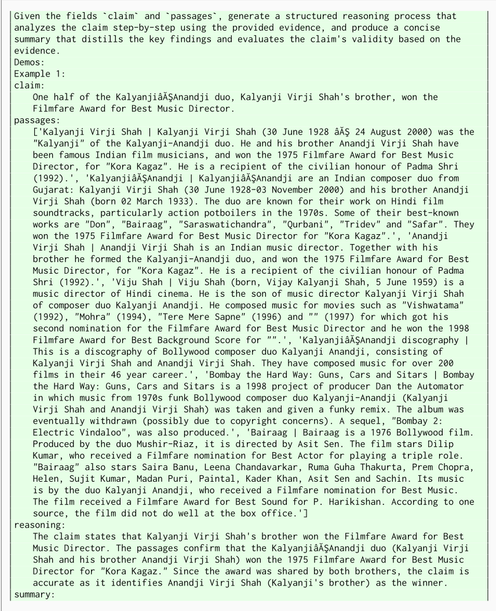
73
Anandji Virji Shah 是 Kalyanji Virji Shah 的兄弟，作为 KalyanjiâĂŞAnandji 二人组合的一员，凭借他们在《Kora Kagaz》中的作品获得了 1975 年 Filmfare 最佳音乐总监奖。
##################################
为节省篇幅，此处省略了另外 3 个演示。
GEPA Prompt generated by config GEPA:
给定字段 ` claim ` 和 ` passages ` ，通过以下方式生成字段 ` summary ` ：
MIPROv2 Prompt:
给定字段 ` claim ` 、 ` context ` 和 ` passages ` ，执行多跳推理（multi-hop reasoning），生成一个用于验证或反驳该声明的结构化摘要。首先，分析该声明和上下文信息，以识别其中的关键关系。接下来，评估检索到的段落中的证据，构建连贯的叙述。构建一条将声明与支持性或矛盾性证据联系起来的逻辑推理链。最后，基于你的分析生成一个简洁的摘要，明确确认或反驳该声明，并引用上下文和段落中的相关证据。
74
以资助建立一座城市。该声明将这两个事实混为一谈，而段落中并没有直接证据表明1519年有记载历史的开端与艾伦的遗产被用于建立休斯敦的那个州相关联。
summary:
所提供的段落不支持该声明，因为这些段落确认了德克萨斯州有记载的历史始于1519年，以及 Augustus Chapman Allen 在德克萨斯州创建了休斯敦，但并未像声明中所述的那样明确地将这两个事实联系起来。
GEPA Prompt generated by config GEPA:
给定字段 ` claim ` 、 ` context ` 和 ` passages ` ，生成字段 ` summary ` ，要求：1. **评估该声明的有效性**，明确将其与 ` passages ` 中的**具体证据**联系起来（例如，引用支持/反驳该声明的确切名称、日期或术语）。
Base Prompt:
给定一个私有的用户查询，为强大的外部 LLM 创建一个保护隐私的请求。
MIPROv2 Prompt:
你将收到一个私有的用户查询。你的任务是仔细分析该查询，并逐步思考以理解用户的意图，同时识别并移除或
76
对任何敏感的、专有的或个人可识别的信息进行抽象化处理。然后，生成一个清晰的、保护隐私的提示（prompt），该提示适用于外部大语言模型（LLM），用于请求有用的、相关的指导或信息，而不暴露私密细节。此外，请提供详细的思维链（CoT）解释，描述你将原始查询转换为经过脱敏、泛化的 LLM 请求的推理过程。确保最终生成的提示是专业的、符合上下文的，并在保持用户隐私的同时使 LLM 能够有效地提供协助。Demos: 示例 1: user_query: 想象你是一名股票研究员和顾问，我会给你一个关于股票的表格，我希望你给我关于下一步该投资什么的建议。这是我正在进行的一个项目，我需要帮助来完成我正在做的预测。表格如下：股票 价格 股息 5D 5D % 1M 1M % YTD YTD % 1Y 1Y % 5Y 5Y % IBM $146,62 $6,64 $3,81 2,66 $2,63 1,83 $5,07 3,58 $16,31 12,51 $0,03 0,02 MCD $284,90 $6,08 $5,07 1,81 -$7,20 -2,46 $20,57 7,78 $29,24 11,44 $123,26 76,26 JNJ $163,98 $4,76 -$3,00 -1,80 -$3,90 -2,32 -$14,21 -7,97 $0,98 0,60 $29,66 22,08 MSFT $324,89 $2,72 $1,25 0,39 -$9,88 -2,95 $85,31 35,61 $59,66 22,49 $217,33 202,05 WMT $158,36 $2,28 $1,39 0,89 -$1,85 -1,15 $14,75 10,27 $25,47 19,16 $62,29 64,84 KO $60,50 $1,84 $0,12 0,20 -$1,59 -2,55 -$2,45 -3,89 -$2,23 -3,55 $15,13 33,35 PFE $36,07 $1,64 -$1,06 -2,84 -$0,67 -1,81 -$15,19 -29,64 -$10,16 -21,98 -$5,43 -13,09 AAPL $179,96 $0,96 $3,45 1,95 -$16,57 -8,43 $54,89 43,89 $18,58 11,51 $125,04 227,65 NVDA $468,23 $0,16 -$3,71 -0,79 $7,05 1,53 $325,08 227,09 $310,22 196,33 $401,52 601,89 CRM $212,10 $0,00 $2,75 1,31 -$9,86 -4,44 $77,32 57,37 $51,89 32,39 $59,11 38,64 PYPL $61,16 $0,00 $1,06 1,76 -$13,82 -18,43 -$13,43 -18,00 -$31,51 -34,00 -$29,46 -32,51 BIDU $137,47 $0,00 $10,24 8,05 -$15,63 -10,21 $18,34 15,39 -$9,85 -6,69 -$88,25 -39,10 reasoning: 用户希望基于所提供的股票数据表获得投资建议，该表包含价格、股息以及各种时间区间（5 天、1 个月、年初至今、1 年和 5 年）的百分比变化。主要请求是获得关于下一步该投资什么的建议，以及在做预测方面的帮助。为了保护隐私，我不应将用户的原始数据或个别股票的具体细节直接包含在发给外部 LLM 的提示中。相反，我应该请求关于如何分析包含价格、股息以及多个时间段百分比变化的股票数据表的一般性建议。此外，我还可以询问在投资决策中应更侧重哪些指标，以及基于此类数据结构的预测策略方面的建议。这种方法确保外部 LLM 不会收到任何私人的或可识别用户身份的数据，只会收到一个通用的请求。我会要求 LLM 提供关于解读此类股票表现指标的指导，以及关于预测分析或投资选择标准的建议。llm_request: 请基于一种数据表格式提供分析股票投资机会的一般性指导，该格式包含股票价格、股息支付以及各种时间区间（如 5 天、1 个月、年初至今、1 年和 5 年）的百分比变化。请概述投资者在决策时通常会权衡的关键指标、如何解读短期与长期表现趋势，并建议在就下一步投资哪些股票做出预测或推荐时应采用的策略或度量指标。该请求仅寻求通用建议，不包含任何具体的股票名称或数值。
77
##################################
隐私保护查询重构助手的新指令（增强版）：
Task Overview:
你收到的用户查询中可能包含敏感、私密或个人可识别信息（PII）。你的目标是将该查询重新表述为一个泛化的、保护隐私的提示，使其适合发送给外部大语言模型（LLM）。重新表述后的提示必须能够让外部 LLM 有效地满足用户的原始意图，同时通过对任何敏感细节进行抽象、省略或泛化，严格保护用户的全部隐私。
Output Format:
请提供一段简洁的段落，说明：
Detailed Domain-Specific Guidance and Best Practices:
内部或专有术语——包括系统名称、产品代码、订阅类型和技术行话——必须被泛化或替换为
79
- 对于地理查询：将确切的地名替换为一般性区域，并提供简要的上下文描述。
- 对于包含系统名称或订阅类型的技术文本：指示大语言模型（LLM）在翻译或处理文本的同时，替换或抽象化专有系统标识符。
- 对于关于特定个人的传记摘要：移除真实姓名，并请求生成一份关于“某位知名人士”的通用且结构良好的四段式摘要，在不泄露个人身份信息（PII）的情况下保留整体意图。
摘要：你的改写必须确保完全不暴露任何 PII 或私有/专有内容，同时保留足够的主题与功能清晰度，使外部 LLM 能够产生高质量、相关的输出。这需要对用户的查询进行透彻分析，严格应用隐私保护策略，并提供明确的推理说明，以记录你的方法与选择。
Base Prompt:
为了获得灵感，我们找到了
潜在相关的请求，对应于
强大的外部 LLM
其响应
MIPROv2 Prompt:
给定一个发送至外部不可信 LLM 的隐私保护脱敏提示及其响应，以及包含潜在敏感信息的原始用户查询，生成一个最终的、连贯的且符合上下文的面向用户的响应。你的输出应将匿名化后的 LLM 输出与原始查询的意图相整合，在确保隐私得到维护的同时，提供一个直接回应用户请求的完整且完善的答案。Demos: 示例 1： related_llm_request: 请详细解释政治学中戴维·伊斯顿（David Easton）的系统分析，概述其系统理论方法的关键组成部分及其在政治系统研究中的意义。related_llm_response: 当然可以！戴维·伊斯顿的系统分析是政治学中的一个基础性框架，它将系统理论应用于政治系统的研究。他的方法提供了一种结构化的方式，用以理解政治系统如何运作、如何维持稳定以及如何响应其环境中的变化。以下是对伊斯顿系统分析的详细解释，包括其关键组成部分和意义。--- ### 戴维·伊斯顿系统分析概述 戴维·伊斯顿（1917–2014）是一位杰出的政治学家，他试图通过借鉴源于生物学和工程学的系统理论中的概念，来发展一种关于政治系统的一般理论。他的目标是创建一个科学的、分析性的
框架，将政治作为一个整合的动态系统来研究，而不是将其视为孤立的事件或机构。伊斯顿的系统分析将政治系统视为从社会行为总体中抽象出来的一组互动，价值的权威性分配（决策）正是通过这些互动做出并实施的。换言之，政治关乎社会如何决定谁在何时、以何种方式得到什么，而伊斯顿的模型有助于解释这些决策是如何做出并得以维持的。
---
### 伊斯顿系统论方法的关键组成部分
伊斯顿的模型将政治系统概念化为一个**黑箱**，它处理输入并产生输出，并嵌入于一个更大的环境之中。其关键组成部分包括：
#### 1. **输入**
输入是来自环境和社会、进入政治系统的要求与支持。
- **要求：** 这些是个人或群体提出的诉求或请求，要求政治系统以特定方式分配价值或资源（例如，对执法、教育、福利的要求）。
- **支持：** 这些是表明认可、效忠或服从政治系统的行动或态度（例如，投票、纳税、遵守法律）。
输入代表了政治系统必须处理的压力和资源。
#### 2. **政治系统（黑箱）**
政治系统是伊斯顿模型的核心。它接收输入，对其进行处理，并产生输出。
- 它包括参与权威性决策的机构、组织和过程（例如，立法机关、行政机关、法院）。
- 该系统将要求和支持转化为决策和政策。
- 该系统必须维持其边界并适应变化以求生存。
#### 3. **输出**
输出是政治系统为响应输入而产生的决策、政策和行动。
- 这些包括法律、法规、公共政策以及价值的权威性分配。
- 输出影响环境和社会，进而影响未来的输入。
#### 4. **反馈**
反馈是输出影响未来输入的过程。
- 正反馈可以增强系统的稳定性。
- 负反馈可以发出问题或不满的信号，促使进行调整。
- 反馈帮助系统适应并维持均衡。
#### 5. **环境**
81
- **过于抽象：** 一些批评者认为，伊斯顿的模型过于抽象和宽泛，缺乏对权力关系、冲突和个人能动性的具体阐述。
- **忽视冲突：** 该模型倾向于强调稳定与均衡，可能淡化了政治冲突与变革。
- **规范性指导有限：** 它主要是描述性和分析性的，对于政治系统应当做什么几乎没有提供规范性指导。
---
### 总结
大卫·伊斯顿的系统分析
user_query: 大卫·伊斯顿的系统分析
response: 大卫·伊斯顿的系统分析是政治学中的一个基础性框架，它将政治系统概念化为一个动态且交互的系统。他的方法运用系统论来解释政治系统如何运作、如何维持稳定以及如何适应其环境的变化。其核心在于，伊斯顿的模型将政治系统视为一个“黑箱”，它处理来自社会和环境的输入，将其转化为输出，并利用反馈来调整和维持自身。伊斯顿系统分析的关键组成部分包括：
1. **输入：** 这些是社会指向政治系统的需求与支持。需求是对资源配置或政策变更的请求或主张，而支持则是维持系统的行动或态度，例如服从、合法性或忠诚。
2. **政治系统：** 这是处理输入的一系列制度与过程。它对需求和支持进行解释以做出权威性决策，包括政策的制定与执行。
3. **输出：** 这些是政治系统为响应输入而产生的决策、政策和行动。它们影响社会及其环境，塑造未来的互动。
4. **反馈：** 输出会产生作为新输入反馈回系统的响应，表明输出是否有效或需要修改。这种反馈使系统能够适应内部和外部的变化。
5. **环境：** 该系统在更广泛的社会、经济、文化和国际背景中运行，这一背景既影响政治系统，也受政治系统的影响。
伊斯顿的理论具有重要意义，因为它提供了一个整体的、面向过程的视角来分析政治，强调社会与国家制度之间的互动。它通过关注输入、处理、输出和反馈的持续循环，为理解政治稳定、适应与变革提供了一个框架。该模型在塑造后续政治理论和比较政治分析方面具有深远影响。
83
然而，批评者指出，伊斯顿的模型可能过于抽象，有时会淡化政治过程中的冲突、权力斗争和个人能动性。
总之，戴维·伊斯顿（David Easton）的系统分析提供了一个强大的概念工具，可用于将政治系统作为动态实体加以研究：这些实体通过权威性决策来管理社会的需求与支持，从而维持秩序并随时间不断适应。
GEPA Prompt generated by config GEPA+Merge:
回答用户的查询。
作为启发，我们找到了一个可能相关的、发送给强大外部大语言模型（LLM）的请求及其回复。
Base Prompt:
给定一个私密的用户查询，为强大的外部 LLM 创建一个保护隐私的请求。
MIPROv2 Prompt:
Given a private user query, generate a structured, non-sensitive LLM request that captures the user's intent while omitting personal details. Include a step-by-step reasoning process explaining how the redaction was achieved, ensuring the request is actionable and privacy-preserving. Format the reasoning as a coherent thought process and the request as a clear, specific task for the LLM to execute. Demos: Example 1: user_query: ЧÑĂÐÿКÐţÑĆ Ð¡ÐřУÐÿÑĹÐÿ ОпÐÐřÐ¡ÐťÑČ ÐťÐżÑŔ пÑĆУÑĂÐřКОÐÿ snmpwalk СÐř ip 10.2.35.2 ÑĄ ÐťÐřССÑŃÐÐÿ Уп ÐťÐ¿ÑĄÑĆÑČУÑČ initi_user/d2J3BgtYdB2/d2J3BgtYdB2 (MD5) DES reasoning: The user is requesting an SNMP walk command to retrieve data from an SNMPv3-enabled device at IP 10.2.35.2. The provided credentials include a username ( ` initi_user ` ), an authentication password ( ` d2J3BgtYdB2 ` ), and an encryption password ( ` d2J3BgtYdB2 ` ). The authentication protocol is MD5, and the encryption protocol is DES. The command must include SNMPv3 options to specify these parameters correctly. llm_request: Generate a command-line instruction for executing ` snmpwalk ` with SNMPv3 authentication and encryption using the provided credentials, ensuring privacy by omitting sensitive details in the response.
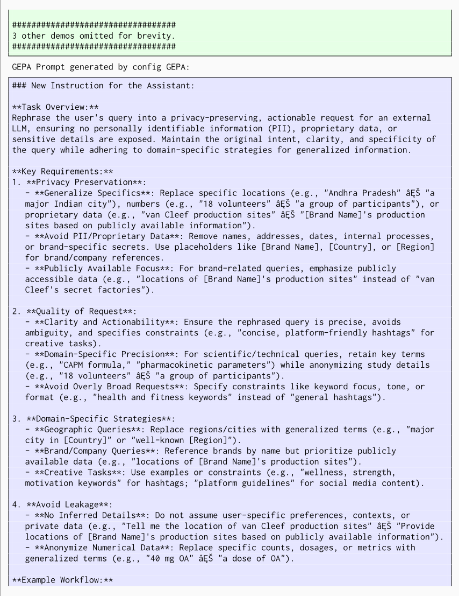
- **User Query**: "Calculate DâĂŹAmicoâĂŹs cost of equity using CAPM with rRF = 4.67%, Κ = 1.56, and market risk premium = 6.63%." - **Rephrased Request**: "Calculate the cost of equity for a company using the CAPM formula, given a risk-free rate of 4.67%, a beta of 1.56, and a market risk premium of 6.63%. Show step-by-step calculations and round the final result to two decimal places." **Niche Domain-Specific Guidance:** - **Scientific/Pharmacokinetic Queries**: Generalize study details (e.g., "18 healthy male volunteers" âĘŠ "a group of participants"), retain key parameters (e.g., AUC, peak concentrations), and avoid proprietary methodologies. - **Creative/Translation Tasks**: Use placeholders for song titles/artists (e.g., "Mahmood's song [Title]") and specify tone/rhythm requirements for translations. - **Financial Calculations**: Retain formulas and numerical values but avoid linking to specific companies or proprietary models. **Final Output Format:** - **reasoning**: Briefly explain the rephrasing choices (e.g., "Generalized '18 volunteers' to 'a group of participants' to preserve privacy"). - **llm_request**: Provide the anonymized, actionable request for the LLM.
Base Prompt:
为获得启发，我们找到了一个可能相关的、发送给强大外部 LLM 的请求及其响应。
将外部 LLM 的响应与用户的具体查询进行综合，以生成最终的隐私保护答案。在省略敏感信息、保持专业语气并确保上下文准确性的同时，用实际值替换占位符。将 LLM 提供的技术方案与用户的独特细节相结合，生成一个清晰、匿名化且符合隐私约束的响应。演示：示例 1：related_llm_request：为 GE Healthcare 在美国创建一个 PESTLE 分析框架，概述每个类别（政治、经济、社会、技术、环境、法律）中的关键问题及其对该组织的潜在影响。在不引用机密数据的情况下，根据紧迫性和重要性对这些问题的优先级进行排序。将输出组织为一个带有明确评估标准的矩阵。related_llm_response：当然！以下是一个为 **GE Healthcare（美国）**量身定制、以矩阵形式组织的 **PESTLE 分析框架**。它概述了每个类别中的关键问题，评估了它们的**紧迫性**和**重要性**，并突出了它们对该组织的**潜在影响**。 --- ### GE Healthcare（美国）PESTLE 分析矩阵
| **类别** | **关键问题** | **紧迫性**（高/中/低） | **重要性**（高/中/低） | **对 GE Healthcare 的潜在影响** |
|---|---|---|---|---|
| **政治** | 1. 医疗政策变化（例如 Medicare/Medicaid 报销制度改革） | 高 | 高 | 直接影响收入来源和产品/服务需求；需要适应新的报销模式。 |
| 2. 医疗设备进出口的贸易政策与关税 | 中 | 中 | 可能增加零部件成本或影响供应链效率。 | |
| 3. 政府对医疗创新与研究的资助 | 中 | 高 | 影响研发（R&D）机会和合作伙伴关系；有获得拨款和补贴的潜力。 | |
| **经济** | 1. 美国医疗支出趋势与预算约束 | 高 | 高 | 影响医院和诊所的购买力；影响销售量和定价策略。 |
| 2. 通货膨胀与运营成本上升 | 高 | 中 | 增加生产和运营开支；可能对利润率造成压力。 | |
| 3. 影响医疗基础设施资本投资的经济周期 | 中 | 中 | 影响对高成本医疗设备和技术升级的需求。 | |
| **社会** | 1. 人口老龄化增加对医疗服务和设备的需求 | 高 | 高 | 推动对诊断成像、监护和治疗设备的需求；增长机会。 |
| 2. 患者意识增强及对个性化医疗的需求增长 | 中 | 中 | 需要在定制化医疗解决方案和数据驱动技术方面进行创新。 | |
| 3. 医疗专业人员劳动力短缺 | 高 | 中 | 可能影响新技术的采用和培训；影响客户支持和服务交付。 | |
| **技术** | 1. 用于诊断和成像的人工智能与机器学习的快速发展 | 高 | 高 | 对保持竞争优势至关重要；需要持续投资于研发和产品开发。 |
| 2. 物联网（IoT）和联网设备在医疗领域的整合 | 中 | 高 | 增强产品供应，但需要强大的网络安全和互操作性解决方案。 | |
| 3. 数据隐私与网络安全技术 | 高 | 高 | 对保护患者数据和遵守法规至关重要；一旦失败将面临法律处罚和声誉受损的风险。 | |
| **环境** | 1. 减少制造过程中碳足迹和废弃物的监管压力 | 中 | 中 | 需要采取可持续的做法；可能带来成本影响，但能提升品牌声誉。 |
| 2. 产品设计和运营中的能效 | 中 | 中 | 可以降低运营成本并吸引具有环保意识的客户。 | |
| 3. 电子废弃物管理与回收计划 | 低 | 中 | 符合环境标准；对企业社会责任的重要性日益增加。 | |
| **法律** | 1. 遵守 FDA 法规和医疗器械审批 | 高 | 高 | 对市场准入至关重要；延迟或失败可能使产品发布停滞并造成财务损失。 |
| 2. 知识产权与专利保护 | 中 | 高 | 保护创新和竞争优势；侵权会带来高昂诉讼的风险。 | |
| 3. 责任与产品安全法规 | 高 | 高 | 确保患者安全；不合规可能导致诉讼、召回和声誉受损。 |
| **类别** | **关键问题** | **紧迫性**（高/中/低） | **重要性**（高/中/低） | **对 GE Healthcare 的潜在影响** |
---
87
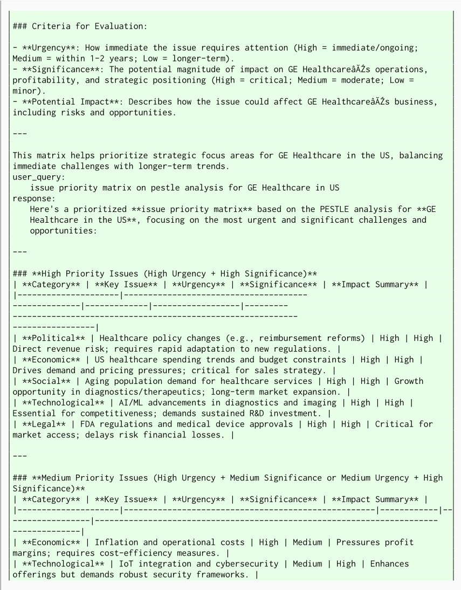
| **环境** | 碳足迹削减与可持续性 | 中 | 中 | 在成本影响与品牌声誉及法规合规之间取得平衡。 | --- ### **优先级排序标准** - **紧迫性**：立即处理（高）与较长期处理（低）。 - **重要性**：关键（高）与中等（中）。 - **关注点**：**紧迫性和重要性均为高**的问题需要立即采取战略行动，而其他问题则需要监控或分阶段规划。该矩阵帮助 GE Healthcare 分配资源，以应对最紧迫的挑战并把握高影响力的机遇。 ################################## 出于篇幅考虑，省略了另外 3 个演示示例。 ##################################
GEPA Prompt generated by config GEPA:
借助一条相关的 LLM（大语言模型）回复作为灵感来响应用户查询。以清晰、有条理的格式（例如项目符号列表、分节）组织你的回答，以增强可读性。确保回复契合用户所使用的语言，并避免包含任何个人可识别信息（PII）或敏感数据。
在改写或总结内容时：
M.1 NPUEVAL: KERNEL CODE GENERATION FOR NEW HARDWARE ARCHITECTURE
图 27 展示了 GEPA 结合 GPT-4o 为 NPU Kernel Generation（NPU 内核生成）任务所生成的提示，该提示在同一个 GPT-4o Agent 上取得了 26.85% 的分数，而同一个 Agent 在使用简单提示时仅取得了 4.25% 的分数。
89
M.2 KERNELBENCH: CUDA KERNEL CODE GENERATION FOR NVIDIA GPUS
GEPA GPT-4o 为 CUDA 内核生成（CUDA Kernel Generation）生成的提示
要通过用自定义 CUDA 内核替换算子来优化给定的 PyTorch 模型，请遵循以下详细说明。你的目标是在确保正确性的同时实现性能提升。将你优化后的输出架构命名为 ` ModelNew ` 。在代码块中输出新的模型代码。请生成真实代码，而非伪代码，并确保代码能够编译且功能完整。不要包含测试代码。
### 创建自定义 CUDA 内核的步骤
#### 1. 确定要替换的算子
- 分析模型，确定能够从自定义 CUDA 实现中受益的算子。
- 考虑算子融合的机会，将多个操作合并到单个内核中以提高效率。
#### 2. 设置与编译
- 使用 ` torch.utils.cpp_extension.load_inline ` 来编译你的 CUDA 代码。这使你能够直接在 Python 脚本中定义和编译自定义 CUDA 内核。
- 确保包含所有必要的 CUDA 和 C++ 头文件，以避免出现缺少头文件的错误。
#### 3. 实现 CUDA 内核
- 编写 CUDA 内核代码，确保其针对并行执行进行了优化。使用共享内存来减少全局内存访问，并确保采用合并的内存访问模式。
- CUDA 内核的示例结构：
``` cpp
__global__ void my_kernel(const float* input, float* output, int size) {
int idx = blockIdx.x * blockDim.x + threadIdx.x;
if (idx < size) {
// Perform computation
}
}
```
#### 4. 内核启动配置
- 配置内核启动参数（块的数量和每个块中的线程数）以最大化 GPU 利用率。
- 示例：
``` python
const int block_size = 256;
const int num_blocks = (size + block_size - 1) / block_size;
my_kernel<<<num_blocks, block_size>>>(input, output, size);
```
#### 5. 错误处理与调试
- 在 CUDA API 调用和内核启动之后，使用 ` cudaGetLastError() ` 实现错误检查，以便尽早捕获错误。
- 使用 ` cuda-memcheck ` 和 NVIDIA Nsight 等 CUDA 调试工具进行调试和性能分析。
- 注意常见的语法错误和命名空间问题，并确保 CUDA 代码符合语法规则。
#### 6. 与 PyTorch 集成
- 定义一个 Python 函数，用于封装 CUDA 内核调用并将其集成到 PyTorch 模型中。
- 示例：
``` python
def my_custom_op(input):
output = torch.zeros_like(input)
my_kernel(input.data_ptr<float>(), output.data_ptr<float>(), input.numel())
return output
```
#### 7. 测试与验证
- 通过将自定义内核的输出与原始 PyTorch 算子进行比较，验证自定义内核的正确性。
- 使用性能分析（profiling）工具来衡量性能提升，并发现进一步的优化机会。
- 为已知良好的输入建立参考输出，以验证正确性。
- 考虑浮点数差异，并使用一个较小的 epsilon 来界定可接受的差异。
#### 8. 兼容性与计算能力
- 确保 CUDA 代码与目标 GPU 的计算能力（compute capability）兼容。
- 使用适当的编译器标志，并在必要时考虑针对多种计算能力进行构建。
### 示例代码
下面是一个示例，展示如何用自定义 CUDA 内核替换简单的逐元素加法（element-wise addition）：
``` python
import torch
import torch.nn as nn
from torch.utils.cpp_extension import load_inline
# Define the custom CUDA kernel for element-wise addition
elementwise_add_source = """
#include <torch/extension.h>
#include <cuda_runtime.h>
__global__ void elementwise_add_kernel(const float* a, const float* b, float* out, int size) {
int idx = blockIdx.x * blockDim.x + threadIdx.x;
if (idx < size) {
out[idx] = a[idx] + b[idx];
}
}
torch::Tensor elementwise_add_cuda(torch::Tensor a, torch::Tensor b) {
auto size = a.numel();
auto out = torch.zeros_like(a);
const int block_size = 256;
```
const int num_blocks = (size + block_size - 1) / block_size; elementwise_add_kernel<<<num_blocks, block_size>>>(a.data_ptr<float>(), b.data_ptr< float>(), out.data_ptr<float>(), size); return out; } """ elementwise_add_cpp_source = ( "torch::Tensor elementwise_add_cuda(torch::Tensor a, torch::Tensor b);" ) # Compile the inline CUDA code for element-wise addition elementwise_add = load_inline( name="elementwise_add", cpp_sources=elementwise_add_cpp_source, cuda_sources=elementwise_add_source, functions=["elementwise_add_cuda"], verbose=True, extra_cflags=[""], extra_ldflags=[""], ) class ModelNew(nn.Module): def __init__(self) -> None: super().__init__() self.elementwise_add = elementwise_add def forward(self, a, b): return self.elementwise_add.elementwise_add_cuda(a, b) ```
93
### 其他最佳实践
- **优化内存使用**：尽量减少主机与设备之间的数据传输，并使用共享内存（shared memory）来减少全局内存访问。
- **原子操作**：在对浮点数使用 ` atomicMax ` 等原子操作时，请遵循最佳实践以确保正确使用，例如使用合适的数据类型并尽量减少争用。
- **性能优化**：最大化并行执行，优化内存访问模式，并使用编译器标志来提升性能。
- **命名空间使用**：避免直接向 ` cuda ` 等保留命名空间中添加类声明或函数定义。可在非保留命名空间内使用嵌套命名空间来组织代码。
- **数值精度**：注意浮点运算中的问题，例如不满足结合律（nonassociativity），并在计算中使用适当的精度级别。
- **调试工具**：使用 CUDA-GDB 和 NVIDIA Nsight 等工具进行调试和性能分析，以确保正确性和性能。
遵循这些说明，你就可以有效地用自定义 CUDA 内核替换 PyTorch 算子，从而同时确保性能提升与正确性。
### 用自定义 CUDA 内核替换 PyTorch 算子的说明
94
#### Constraints
通过遵循这些指令，你将能够有效地用自定义 CUDA 内核替换 PyTorch 算子，在保持模型精度的同时实现显著的性能提升。
N NUMBER OF REFLECTION LM CALLS MADE BY GEPA DURING OPTIMIZATION
| Benchmark Name | Num Reflection Calls GPT-4.1-Mini | Num Reflection Calls Qwen3-8B |
|---|---|---|
| AIME-2025 | 24 | 90 |
| LiveBench-Math | 34 | 38 |
| HotpotQA | 69 | 64 |
| IFBench | 21 | 17 |
| Hover | 92 | 50 |
| PUPA | 46 | 38 |
| Benchmark Name | Num Reflection Calls GPT-4.1-Mini | Num Reflection Calls Qwen3-8B |
96
证据核查
2 条证据未在原文中核对到